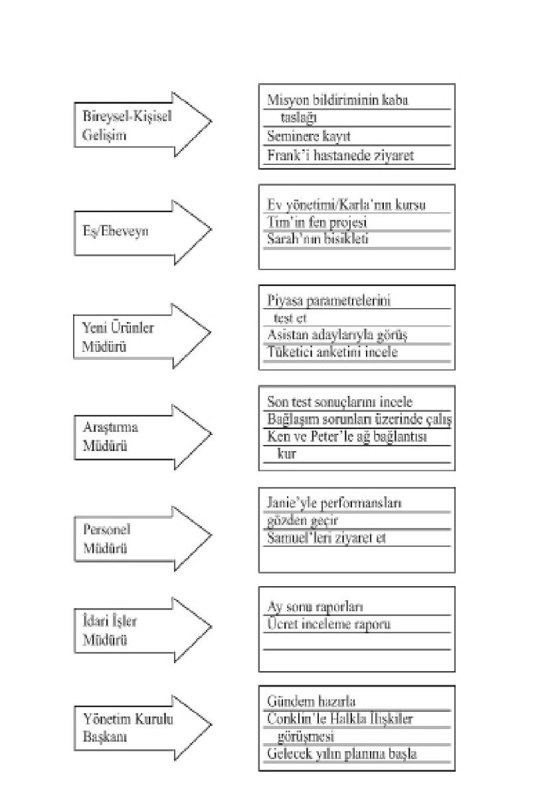
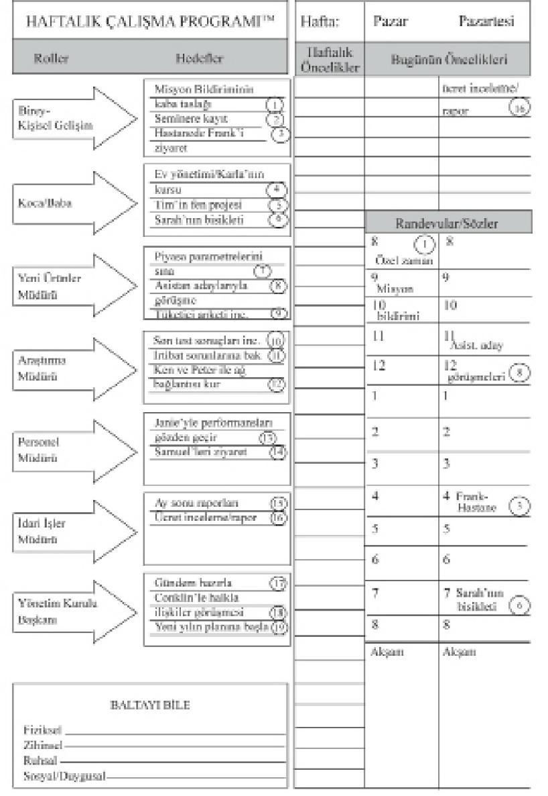
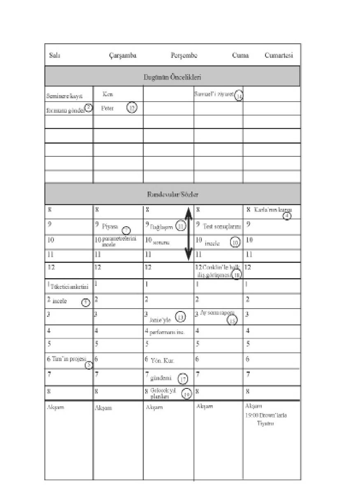
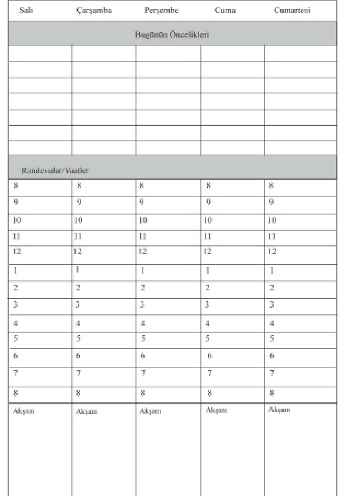

yerine zorlar.
Bu kuşakların üçü de bir tür yönetim aracının değerini kabul etmiş
olmakla birlikte, hiçbiri ilke merkezli, I . Kare yaşam tarzını
sürdürme gücünü verecek bir araç geliştirmemiştir. İlk kuşağın not
defterleri ve “yapılması gereken işler” listesi, bize sadece farkına
vardığımız şeyleri unutmamamız için bir ortam sağlar.
İkinci kuşağın
randevu defterleri ve takvimleri ise sadece, uygun zamanda söz
verdiğimiz yerde bulunabilmemiz için geleceğe yönelik yükümlülüklerimizi
kaydedeceğimiz bir ortam sağlar.
Üçüncü kuşak bile, çok sayıda planlayıcısı ve malzemesiyle,
esas olarak insanların I. ve I I. Kare etkinliklerini önceliklerine göre
sıralayıp planlamalarına yardımcı olmaya odaklanır.
Pek çok eğitici
ve danışman I . Kare etkinliklerinin değerini kabul etse de, üçüncü
kuşağın planlama araçları, onların etrafında örgütlenme ve uygulamaya
geçme çabalarını kolaylaştırmaz.
Her kuşak, kendisinden öncekinin temel eri üzerine kurulduğu
için, ilk üç kuşağın güçlü yanları ve bazı araçları, dördüncüsü için
temel malzemeyi sağlar. Ancak I . Kare’ye geçmemiz, ilke merkezli
olmamız ve gerçekten önemli olan işleri yapacak şekilde kendimizi
yönetmemiz için bize güç verecek yeni bir boyuta, paradigmaya ve
uygulamaya da ihtiyacımız vardır.
I . Kare yöneticiliğinin amacı, yaşamımızı etkili bir biçimde
–sağlam ilkelerden oluşan bir merkezden, kişisel misyonumuza dair
bir bilgiden yola çıkarak, acil işlerin yanı sıra önemli olanların da
üstünde durarak– yönetmektir. Üretimimizi artırmakla, üretme yeteneğimizi
artırmak arasındaki dengenin (Ü/ÜY) sürdürülmesini de
öngörür.
Açıkçası bu, I I. ve IV. Karelerdeki sığ şeylerin içine batmış
olanlar için fazlasıyla iddialı bir amaçtır. Ama bunu başarmaya çalışmak,
kişisel etkililiği alabildiğine geliştirecektir.
I . Kare’de işleri örgütleyen birinin, altı önemli kıstasa uyması
gerekir.
TUTARLILIK. Tutarlılık; vizyonunuzla misyonunuz, rol erinizle hedefleriniz, önceliklerinizle planlarınız, isteklerinizle disiplininiz arasında
uyum, birlik ve bütünlük olduğunu gösterir.
Ajandanızda, sık
sık başvurabilmeniz için kişisel misyon bildirgenize bir yer olmalıdır.
Ayrıca rol eriniz ve hem kısa hem de uzun vadeli hedefleriniz
için de bir yer bulunmalıdır.
DENGE. Gereciniz dengeli bir yaşam sürdürmenize, çeşitli rol erinizi
tanımlamanıza ve onları göz önünden ayırmamanıza yardımcı
olmalıdır. Böylece sağlığınız, aileniz, profesyonel hazırlıklarınız ya
da kişisel gelişiminiz gibi önemli alanları ihmal etmezsiniz.
Pek çok insan bir alandaki başarının, yaşamın diğer alanlarındaki
başarısızlığı telafi edeceğini düşünür. Ama bunu gerçekten yapabilir
mi? Belki bazı alanlarda kısıtlı bir süre için yapabilir.
Ancak
mesleğinizdeki başarınız sona eren bir evliliği, bozulmuş bir sağlığı ya da karakter zayıflığını giderebilir mi? Gerçekten etkili olmak için
denge gereklidir, gereciniz de bunu yaratmanıza ve sürdürmenize
yardım etmelidir.
I . KARE ODAĞI. Sizi yüreklendirecek, size şevk verecek, I . Kare’de
gerektiği kadar zaman harcamanıza yardım edecek bir araca
gereksiniminiz var. Böylece krizleri önceliklerine göre sıralamak
yerine, onları önlemeye çalışacaksınız. Bence bunu yapmanın en iyi
yolu, yaşamınıza haftalık bir çekidüzen vermektir. Bu arada günlük
planları uygulayıp öncelikleri sıraya dizebilirsiniz, ama asıl hamle,
haftayı düzenlemektir.
Haftalık düzenleme günlük planlamaya oranla daha iyi bir denge
ve daha geniş bir bağlam sağlar. Haftanın tek ve tam bir zaman birimi
olarak kültürel anlamda üstü örtülü bir kabul gördüğü anlaşılıyor.
İş dünyasında, eğitimde ve diğer birçok toplumsal alanda, haftalık
bir çerçeve içinde faaliyet gösterilir; bazı günler odaklı yatırımlara,
diğerleri ise dinlenmeye ya da esinlenmeye ayrılır.
Yahudi-Hıristiyan
etiği bunun için Sebt (Yahudiler için cumartesi, Hıristiyanlar
için pazar) gününü, (İslam ise cuma gününü) manevi amaçlara ayırmıştır.
Çoğu kişi hafta bağlamında düşünür. Üçüncü kuşak planlama
araçları ise günlük planlamaya odaklanır. Bunlar etkinliklerinizi önceliklerine
göre sıralamanıza yardım edebilir. Ancak temelde, krizleri
ve ıvır zıvır işleri örgütlemenize yardımcı olur. İşin anahtarı,
programınızdaki işleri önceliklerine göre sıralamak değil, öncelikli
işlerinizi programlamaktır. Bu ise en iyi şekilde, haftalık bağlamda
yapılabilir.
“İNSAN” BOYUTU. Size yalnızca programlarla değil, insanlarla da
ilgilenen bir gereç gereklidir. Zaman konusuna verimlilik açısından
bakabilirsiniz. İlke merkezli bir kişi ise insanlarla ilişkilerinde etkililik
bağlamında düşünür. Bazen, ilke merkezli I . Kare’de yaşamak,
programların insanlara tabi kılınmasını gerektirir.
Kul andığınız gereç
o değeri yansıtmalı, programa uyulmadığı zaman suçluluk duygusu
yaratmak yerine yürütmeyi kolaylaştırmalıdır.
ESNEKLİK. Planlama gereciniz size hizmet etmelidir.
Asla efendiniz
olmamalıdır. Sizin için çalışması gerektiğine göre kendi tarzınıza,
gereksinimlerinize ve belirli yöntemlerinize göre biçilmiş olmalıdır.
TAŞINABİLİRLİK. Kul andığınız gereç, çoğu zaman yanınızda götürebilmeniz
için ayrıca taşınabilir olmalıdır. Örneğin, otobüste giderken
kişisel misyon bildirgenizi gözden geçirmek isteyebilirsiniz.
Yeni bir fırsatın değerini daha önce planladığınız bir şeyle karşılaştırmayı
arzu edebilirsiniz. Planlayıcınız taşınabilir türdense, onu yanınıza
alabilir ve böylece önemli verilere her an erişebilirsiniz.
I . Kare etkili özyönetimin can damarı olduğu için, sizi I . Kare’ye
taşıyacak bir gereç gereklidir. Dördüncü kuşak kavramıyla
ilgili çalışmalarım, özel olarak yukarıda sayılan kıstaslara göre
tasarlanmış bir gerecin yaratılmasına yol açtı. Ama üçüncü kuşak
gereçlerinden birçoğu kolayca uyarlanabilir. İlkeler sağlam olduğu
için, özgül uygulamalar kişiden kişiye değişebilir.
KENDİNİ II. KARE’DE YÖNETEN
BİRİ OLMAK
Ben burada etkililiğin ilkelerini öğretmeye çalışıyorum, nasıl
uygulanacaklarını değil. Yine de ilke merkezli I . Kare temelinden
hareket ederek haftalık bir düzenleme yaparsanız, dördüncü kuşağın
ilkelerini ve güç verici niteliklerini daha iyi anlayacağınıza inanıyorum.
I . Kare düzenlemesi dört ana etkinlik içerir.
ROLLERİ TANIMLAMA. İlk göreviniz ana rol erinizi bir yere yazmaktır.
Yaşamınızda üstlenmekte olduğunuz rol eri ciddi bir biçimde
düşünmediyseniz, hemen aklınıza gelen şeyleri not edebilirsiniz.
Birey olarak bir rolünüz var. Çekirdek ailenin –karı ya da koca, anne
ya da baba, oğul ya da kız– yanı sıra, büyük annelerle babalar, amcalar,
dayılar, teyzeler, halalar, yeğenler ve diğerlerinden oluşan geniş
ailenin de bir üyesi olarak bir ya da birkaç rolü sıralamak isteyebilirsiniz.
Zaman ve enerjinizi düzenli olarak harcamak istediğiniz alan185
ları belirleyerek işinizde üstlendiğiniz birkaç rolü sıralamak isteyebilirsiniz.
Dinsel ya da toplumsal etkinliklerde de rolünüz olabilir.
Yaşamınızın sonuna kadar üstleneceğiniz rol eri belirlemeyi
düşünerek kaygılanmanıza gerek yok. Yalnızca haftayı göz önüne
alın ve önünüzdeki yedi gün boyunca zaman ayıracağınız alanları
yazın.
Aşağıda, insanların çeşitli rol erini nasıl görebileceklerini gösteren
iki örnek yer alıyor:
1. Birey 1. Kişisel gelişim
2. Eş/Ebeveyn 2. Eş
3. Yeni Ürünler Müdürü 3. Ebeveyn
4. Araştırma Müdürü 4. Emlakçı 5. Personel Müdürü 5. Sosyal hizmet
6. İdari İşler Müdürü 6. Senfoni Orkestrası 7. Yönetim Kurulu Başkanı Kurul Üyesi HEDEF SEÇME. Bir sonraki adım, önünüzdeki yedi gün içinde her
bir rolünüzde elde etmeniz gereken iki ya da üç önemli sonucu düşünmektir.
Bunlar hedef olarak kaydedilmelidir. (Bir sonraki sayfaya
bakın.)
Bu hedeflerden hiç olmazsa birkaçı I . Kare etkinliklerini yansıtmalıdır.
İdeal olan, bu kısa vadeli hedeflerin kişisel misyon bildirgenizde
belirlediğiniz uzun vadeli hedeflerle bağlantılı olmasıdır. Ama
kişisel misyon bildirgenizi yazmadıysanız bile, her bir rolünüzü ve
bu rol er için seçtiğiniz iki-üç hedefi ele alırken neyin önemli olduğunu
hissedip anlayabilirsiniz.
PROGRAMLAMA. Şimdi önünüzdeki haftaya 
hedeflerinizi aklınızda
tutarak bakıp, bunlara ulaşmak için zamanınızı programlayabilirsiniz.
Örneğin, hedefiniz kişisel misyon bildirgenizin ilk taslağını
hazırlamaksa, üzerinde çalışmak için pazar gününün iki saatini
ayırmayı düşünebilirsiniz. Pazar günü (ya da size, inancınıza ya da
koşul arınıza uygun düşen bir başka gün), genelde moralinizi yükseltecek
etkinliklerinizi planlamak ve haftalık düzenleme yapmak
için ideal zamandır. Geriye çekilmek, ilham kaynağı aramak, yaşamınıza
ilkeler ve değerler açısından bakmak için de uygundur.
Egzersiz yaparak fiziksel açıdan formda olmayı hedefliyorsanız,
o hedefe ulaşmak için hafta içinde üç-dört gün, ya da mümkünse her
gün bir saatinizi buna ayırmak isteyebilirsiniz. Bazı hedeflere ancak
çalışma saatlerinde, bazılarına ise yalnızca cumartesi günleri çocuklarınız
evdeyken ulaşabilirsiniz. Bir gün yerine bütün bir haftayı düzenlemenin
bazı üstün yönlerini anlamaya başlıyor musunuz?
Rol erinizi tanımlayıp hedeflerinizi belirledikten sonra, her hedefi
öncelikli bir konu olarak, ya da daha iyisi, özel bir randevu şeklinde
haftanın belirli bir gününe atayabilirsiniz. Ayrıca daha önce
vermiş olabileceğiniz randevular için yıl ık ya da aylık takviminize
bakabilir, bunların önemini hedefleriniz bağlamında değerlendirebilir,
bazılarını programınıza alıp bazılarını erteleyebilir ya da iptal
edebilirsiniz.
188-189. sayfalardaki haftalık çalışma programını incelerken,
genelde I . Kare’ye ait en önemli on dokuz hedefin nasıl programlandığını
ya da belirli bir hareket planı haline dönüştürüldüğünü gözlemleyin. Buna ek olarak, 7. Alışkanlık’ta açıklanacak olan dört
insani boyutun her birinde büyük önem taşıyan yenileyici I . Kare
etkinliklerinin planlanmasına yer ayıran “Baltayı Bile”
yazılı kutuya
dikkat edin.
Hafta içinde 19 önemli hedefe erişmek için ayrılmış
zamanın
yanı sıra, çalışma listesindeki programlanmamış
alana bir bakın! I .
Kare’de yapacağınız haftalık düzenleme size önemli işlere öncelik
verme gücünü kazandırırken, bir yandan da beklenmedik olaylarla
başa çıkmak, gerekirse randevuları kaydırmak, başkalarıyla ilişki ve
etkileşimlerin tadına varmak, doğal deneyimlerden keyif almak için
gerekli olan özgürlük ve esnekliği de sağlar. Böylece, yaşamınızın
her alanında önemli hedeflere ulaşabilmek için haftanızı proaktif bir
biçimde düzenlediğinizi bilirsiniz.
GÜNLÜK UYUM. I. Kare’nin haftalık düzenlemesiyle, 
günlük planlama,
daha çok güne uyum sağlama, etkinlikleri önceliklerine göre
sıralama ve beklenmedik olaylara, ilişkilere ve deneyimlere anlamlı
bir biçimde karşılık verme işlevine dönüşür.

Her sabah birkaç dakikanızı programınızı gözden geçirmeye
ayırmanız, haftanızı düzenlerken verdiğiniz değerlere dayalı kararlar
ve ortaya çıkabilecek beklenmedik etkenlerle bağlantı kurmanızı
sağlayabilir. Gününüzü gözden geçirirken, rol erinizin ve hedeflerinizin,
içinizdeki denge duygusundan gelen doğal bir öncelik sıralaması
sağladığını görebilirsiniz. Bu, kişisel misyon anlayışınızdan
doğan, sağ beyne özgü bir sıralamadır.
Yine de üçüncü kuşağın A, B, C ya da 1, 2, 3
şeklindeki öncelik
sıralamasının günlük etkinliklere gerekli düzeni sağladığını düşünebilirsiniz.
Etkinliklerin önemli ya da önemsiz olduklarını söylemek
yapay bir ayırım olur. Onların bir süreklilik oluşturdukları bel idir
ve bazı önemli etkinlikler diğerlerinden daha önemlidir. Haftalık
düzenleme bağlamında, üçüncü kuşak öncelik sıralaması günlük
odağı düzene sokar.
Ancak etkinliklerin kişisel misyon anlayışınızla ne tür bir ilişkisi
olduğunu ve yaşamınızın dengesine nasıl uyduğunu bilmeden bunları
sıralamaya çalışmak hiç de etkili bir yöntem değildir.
İstemediğiniz
ya da yapmanıza gerek olmayan şeyleri sıraya dizip gerçekleştiriyor
olabilirsiniz.
HAFTALIK DÜZENLEME
Hedefler Misyon
Bildirgesi Rol er
Rol er Hedefler Planlar
Programla
Yetkilendir
Haftanızı bir ilke merkezli I . Kare yöneticisi gibi düzenlemekle,
günlerinizi merkezinde başka şeyler olan bir birey gibi planlamak
arasındaki farkı görebiliyor musunuz? I . Kare odağının şu andaki
etkililik düzeyinizde yaratacağı o müthiş farkı anlayabiliyor musunuz?
İlke merkezli I . Kare düzenlemesinin gücünü kendi yaşamımda
gördüğüm ve diğer yüzlerce insanın yaşamını değiştirdiğine tanık
olduğum için, bunun çok büyük ve olumlu bir fark yarattığı kanısındayım.
Haftalık hedef, doğru ilkelerden oluşan daha geniş bir çerçeveye
ve kişisel bir misyon bildirgesine ne kadar bağlıysa, etkililikteki
artış da o kadar fazla olur.
II. KARE’Yİ YAŞAMAK
Tekrar bilgisayar benzetmesine dönersek, 1.
Alışkanlık “Programcı
sensin,” 2. Alışkanlık da “Programı yaz,” diyorsa, o zaman 3.
Alışkanlık, “Programı çalıştır,” “Programı yaşa,” der.
Onu yaşamak
ise öncelikle özgür irademizin, kendimize dayattığımız disiplinin,
kişisel bütünlüğümüzün ve bağlılığımızın; kısa vadeli hedefler ve
programlara ya da uyaranlara değil, hedeflerimize, programlarımıza
ve yaşamımıza anlam ve bağlam kazandıran doğru ilkelere ve en
derin değerlerimize olan bağlılığımızın bir sonucudur.
Haftanızı yaşarken, hiç kuşkusuz kişisel bütünlüğünüzün sınandığı
zamanlar olacaktır. I I. Kare’de diğer insanların acil ama önemsiz
önceliklerine tepki göstermenin yaygınlığı, ya da IV.
Kare’ye
kaçmanın verdiği zevk, planladığınız I . Kare etkinliklerinin gölgede
kalmasına neden olabilir. İlke merkeziniz, özbilinciniz ve vicdanınız,
gerçek bir güvenlik, rehberlik ve bilgelik sağlayabilir.
Bunlar
size özgür iradenizi kul anma ve gerçekten önemli olan şeyler konusunda
bütünlüğünüzü koruma gücünü verecektir.
Ama gücünüz her şeye yetmeyeceği için, neyin gerçekten önemli
olduğunu önceden bilemeyebilirsiniz. Haftanızı ne kadar dikkatlice
düzenleseniz de, ilke merkezli bir kişi olarak programınızı daha
yüksek bir değer karşısında arka plana itme gereğini duyacağınız
zamanlar olacaktır. İlke merkezli olduğunuz için de, bunu iç huzuruyla
yapabilirsiniz.
Bir ara, oğul arımdan biri işlerini programlamaya ve verimliliğe
çok önem veriyordu. Programının çok sıkışık olduğu bir gün, her
şeye dakikası dakikasına zaman ayırmak zorunda kalmıştı. Bunların
arasında bazı kitaplar almak, arabasını yıkamak ve kız arkadaşı Carol’dan
“ayrılmak” da vardı.
Sıra Carol’a gelinceye kadar her şey programa uygun gitti. Uzun
süredir beraberdiler ve oğlum devamlı bir ilişkinin yürümeyeceği
sonucuna varmıştı. Dolayısıyla da verimlilik modeline uygun bir biçimde,
Carol’a bu haberi vermek için on-on beş dakikalık bir telefon
görüşmesi programlamıştı.
Ancak bu haber kızı çok sarsmıştı. Oğlum, bir buçuk saat sonra
hâlâ Carol’la yoğun bir tartışma halindeydi. Yine de bu tek görüşme
yeterli olmadı. Durum her ikisini de çok rahatsız etmiş
ve üzmüştü.
Bir kez daha, insanlar söz konusu olduğunda verimliliği düşünemezsiniz.
İnsanlar konusunda etkili olmayı, nesneler konusunda
verimli olmayı düşünürsünüz. Bana itiraz eden ya da kafa tutan bir
kimseye karşı verimli olmayı denediğimde işe yaramaz. Bir çocuğa
ya da bir elemana bir sorunu çözmesi için on dakikalık bir süre verdiğimde,
bu tür “verimliliğin” yeni sorunlar yarattığını ve derindeki
asıl sorunu nadiren çözdüğünü görürüm.
Pek çok ebeveynin, özel ikle de küçük çocukları olan annelerin
çok şey başarma arzusu içinde çoğu zaman hüsrana uğradıklarını
görüyorum, çünkü gün boyunca yaptıkları tek şey, küçük çocuklarının
gereksinimlerini karşılamak oluyor. Unutmayın ki, hüsran duygusu
beklentilerimizin bir işlevidir. Beklentilerimiz ise çoğu zaman
kendi değerlerimiz ve önceliklerimizin değil, toplumsal aynanın bir
yansımasıdır.
Ancak 2. Alışkanlık yüreğinizin ve zihninizin derinliklerine
yerleşmişse, o yüksek değerler sizi zorlar.
Programınızı kişisel bütünlükle
bu değerlere tabi tutabilirsiniz. Uyum sağlayabilir, esnek
olabilirsiniz. Programınıza uymadığınızda ya da değişiklik yapmak
zorunda kaldığınızda, kendinizi suçlu hissetmezsiniz.
İLERLEMELER
İnsanların üçüncü kuşak zaman yönetimi gereçlerine direnmelerinin
bir nedeni de, doğal ık ve esnekliklerini kaybederek katılaşmalarıdır.
Bu gereçler insanları programlara boyun eğdirir, çünkü
üçüncü yönetim kuşağının verimlilik paradigması, insanlar nesnelerden
daha önemlidir ilkesiyle uyumsuzdur.
Dördüncü kuşak gereci bu ilkeyi kabul eder.
Verimlilik değil de
etkililik bakımından ele alınması gereken ilk kişinin kendiniz olduğu
gerçeğini de kabul eder. I . Kare’de zaman geçirmeniz, ilkeleri
anlayıp yaşamınızın merkezi haline getirmeniz, günlük kararlarınızı
yönlendirmesini istediğiniz amaç ve değerleri açıkça belirlemeniz
için sizi teşvik eder. Dengeli bir yaşam kurmanıza ve günlük planlamanın
kısıtlamalarından kurtularak, her şeyi haftalık bir düzene
oturtup programlamanıza yardımcı olur. Daha yüksek bir değer
planladığınız şeyle çatıştığı zaman da, özbilincinize ve vicdanınıza
dayanarak çok önemli olduğuna karar verdiğiniz ilke ve amaçlara
sadık kalmanız için size güç aşılar. Bir yol haritası yerine, bir pusula
kul anıyor olursunuz.
Özyönetimin dördüncü kuşağı, üçüncüye kıyasla beş
önemli açıdan
daha ileri düzeydedir.
Birincisi, ilke merkezlidir. I. Kare’ye lafla bağlı değildir; zamanınızı,
gerçekten önemli ve etkili olan şeyler bağlamında görmenizi
sağlayan merkezi paradigmayı yaratır.
İkincisi, vicdan tarafından yönlendirilir. Yaşamınızı en köklü
değerlerinizle elinizden geldiğince uyum içinde düzenleme fırsatını sağlar. Aynı zamanda, programınızı daha yüksek değerlere gönül rahatlığıyla
tabi tutma özgürlüğünü de verir.
Üçüncüsü, değerler ve uzun vadeli hedefler de dahil, kendinize
özgü misyonunuzu tanımlar. Bu da günlük yaşantınıza yön ve amaç
duygusu katar.
Dördüncüsü, rol erinizi belirleyerek hayatınızı dengelemenize
yardım eder. Bütün kilit rol er için her hafta hedefleri saptayıp etkinlikleri
programlar.
Beşincisi, haftalık düzenlemeyle daha büyük bir bağlam sağlar
(gerektiğinde günlük uyarlamalar da yapar.) Tek bir günün kısıtlayıcı
perspektifinden sıyrılarak, en derin değerlerinizle bağlantı kurmanızı
ve kilit rol erinizi gözden geçirmenizi sağlar.
Bu beş özel iğin ortak bir yanı da vardır. Birincil odak noktaları,
ilişkiler ve sonuçlardır. İkincil odak noktaları ise zamandır.
YETKİ VERMEK: Ü VE ÜY’Yİ
ARTIRMAK
Bütün yaptıklarımızı, zamanı ya da insanları yetkilendirerek başarırız.
Zamanı yetkilendiriyorsak verimliliği; başka insanları yetkilendiriyorsak
da etkili olmayı düşünüyoruz demektir.
Birçok kişi başkalarına yetki vermeye yanaşmaz.
Çünkü bunun
çok fazla zaman ve çaba gerektirdiğini, işi kendisinin daha iyi yapabileceğini
düşünür. Oysa, başkalarına etkili biçimde yetki vermek,
belki de insanları harekete geçirecek en güçlü etkinliktir.
Sorumluluğu eğitilmiş, usta kişilere devretmek, enerjinizi diğer
güçlü etkinliklere yöneltmenizi sağlar. Yetki vermek, hem bireyler
hem de kurumlar için gelişim anlamına gelir. Merhum J.C. Penney,
verdiği en akıl ıca kararın, artık her şeyi tek başına yapamayacağını
anladığı zaman “dizginleri bırakmak” olduğunu söylemesiyle anımsanır.
Çok uzun bir zaman önce verilen bu karar, yüzlerce mağaza ve
binlerce insanın gelişip büyümesini sağlamıştır.
Yetkilendirme, başka insanları da işin içine kattığı için bir Genel
Zaferdir ve 4. Alışkanlığa dahil edilebilir. Ancak buradaki odak noktamız
kişisel yönetim ilkeleri olduğu ve başkalarını yetkilendirme
yeteneği yöneticiyle bağımsız üretici rol eri arasındaki temel farkı
oluşturduğu için, yetki verme konusuna kişisel yönetim becerileriniz
Bir üretici istenilen sonuçlara erişmek, altın yumurtayı elde etmek
için ne gerekiyorsa onu yapar. Bulaşık yıkayan bir anne, taslak
çizen bir mimar ya da bilgisayarda mektup yazan bir sekreter, üreticidir.
Ne var ki bir insan altın yumurtalar üretmek için başkalarından
ve sistemlerden yararlandığı zaman, karşılıklı bağımlılık açısından
bir yöneticiye dönüşür. Bulaşık yıkama işini çocuğuna devreden bir
anne, yöneticidir. Başka mimarlardan oluşan bir ekibi yöneten bir
mimar, yöneticidir. Diğer sekreterleri ve büro personelini denetleyen
bir sekreter, büro yöneticisidir.
Bir üretici bir saatlik çaba harcayarak tek birimlik bir sonuç sağlar;
tabii verimliliğinden bir şey kaybetmemesi koşuluyla.
Öte yandan bir yönetici, bir saatlik çabayla ve etkili bir yetkilendirme
yoluyla on, el i ya da yüz birimlik bir sonuç elde eder.
Yöneticilik, esas olarak manivelanın dayanak noktasını ileri
kaydırmaktır, etkili bir yönetimin anahtarı ise başkalarına yetki vermektir.
Temelde iki tür yetkilendirme vardır: “Emireri yetkisi vermek”
ve “kaptanlık yetkisi vermek.” Emireri yetkisi vermek, “Şuraya git,
buraya git, şunu yap, bunu yap, iş bitince de bana haber ver!” anlamına
gelir. Üretici olan insanların çoğu emireri yetkisi verme paradigmasına
sahiptir. Ormanda baltayla yol açan adamları hatırlıyorsunuz
değil mi? Onlar üreticidir. Kol arını sıvayıp işe girişirler.
Kendilerine bir denetim ya da yönetim görevi verilse bile, yine bir
üretici gibi düşünürler. Başka birini de yükümlülük altına sokacak
şekilde, tam anlamıyla yetkilendirmeyi bilmezler.
Odak noktaları
yöntemler olduğu için, sonuçlardan sorumlu olurlar.
Bir zamanlar ailece su kayağı yapmaya gittiğimizde, bir emireri
yetkisi vermeye kalkışmıştım. Çok usta bir kayakçı olan oğlum sudaydı.
Ben motoru kul anıyor ve onu çekiyordum. Fotoğraf makinesini
Sandra’ya vererek birkaç resim çekmesini istedim.
Önce, elimizde fazla film kalmadığı için çekeceği fotoğrafları
dikkatle seçmesini söyledim. Sonra eşimin fotoğraf makinesine aşina
olmadığını hatırlayarak, biraz daha ayrıntılı talimat vermeye başladım.
Güneş tekneyi arkasına alana kadar beklemesini söyledim.
Oğlumuzu dalganın üzerinden atlarken ya da bir dönüş sırasında
dirseğini suya değdirirken yakalamasını istedim.
Ancak, filmin yetersizliğini ve eşimin kamera konusundaki
deneyimsizliğini düşündükçe, endişem de arttı.
Sonunda, “Dinle,
Sandra,” dedim. “Sana söylediğim zaman sadece düğmeye bas. Tamam
mı?” Ondan sonraki birkaç dakikayı, “Şimdi çek!
Şimdi çek!
Çekme! Çekme!” diye bağırarak geçirdim.
Hareketlerini saniyesi
saniyesine kontrol etmezsem resimleri doğru dürüst çekemeyeceğinden
korkuyordum.
Bu, tam bir emireri yetkisiydi. Yöntemlerin teker teker denetlenmesiydi.
Pek çok insan sürekli olarak bu şekilde yetki verir.
Ama bu
ne kadar işe yarar? Yaptıkları her harekete müdahale ederek kaç kişiyi
denetleyebilir ya da yönetebilirsiniz ki?
Başkalarına yetki vermenin çok daha iyi, daha etkili bir yolu vardır.
Bu, başkalarının özgür iradesini, vicdanını, hayal gücünü ve özbilincini
takdir etme paradigmasına dayanır.
Kaptanlık yetkisi vermenin odak noktası yöntemler değil, sonuçlardır.
İnsanlara yöntemi seçme hakkını tanır ve onları sonuçlardan
sorumlu tutar. Başlangıçta daha fazla zaman alır, ama harcanacak
zaman iyi bir yatırımdır. Kaptanlık yetkisi vererek manivelanın dayanak
noktasını kaydırıp, kaldırma gücünü artırabilirsiniz.
Kaptanlık yetkisi vermek, beş alandaki beklentiler bakımından
peşinen karşılıklı anlayış ve bağlılık gerektirir.
İSTENİLEN SONUÇLAR. Başarılması gereken şey konusunda açık
bir karşılıklı anlayış yaratın. Odak noktanız nasıl değil, ne; yöntemler
değil, sonuçlar olsun. Zaman harcayın. Sabırlı olun.
İstenilen
sonucu gözünüzün önünde canlandırın. Karşınızdaki kişinin onu
görmesini, tanımlamasını, sonuçların nasıl olacağı ve ne zaman elde
edileceği konusunda kaliteli bir bildirge oluşturmasını sağlayın.
KURALLAR. Söz konusu bireyin hangi parametreler içinde çalışacağını
belirleyin. Yöntemlerin devredilmesinden kaçınabilmek için
bunlar mümkün olduğu kadar az sayıda olmalı, ancak önemli kısıtlamaları
da içermelidir. Kaptanlık yetkisi verdiğiniz kişinin, sonuçlara
ulaşması koşuluyla istediğini yapabileceğini düşünmesini ve bu
arada süregelen bir geleneksel uygulamayı ya da değeri çiğnemesini
istemezsiniz. Bu, inisiyatifi öldürür ve emireri yöntemine dönmeye
neden olur: “Ne yapmamı istediğini söyle ki, yapayım.”
Verilen işin başarısızlığa uğrayabilecek yanlarını biliyorsanız,
onları açıklayın. Dürüst ve açıksözlü olun. Karşınızdaki kişiye bataklığın
yerini ve vahşi hayvanların nerede bulunduğunu söyleyin.
Tekerleği her gün yeniden icat etmek istemezsiniz sanırım. İzin verin
de, insanlar sizin ya da başkalarının hatalarından ders alsınlar.
Başarısızlığa gidebilecek yol arı, yapılmaması gereken şeyi işaret
edin, ama ne yapmaları gerektiğini söylemeyin.
Onları sonuçlardan
–kural ar dahilinde yapılması gereken şeylerden– sorumlu tutun.
KAYNAKLAR. Söz konusu kişinin, istenilen sonuçları elde etmesi
için yararlanabileceği insani, maddi, teknik ve kurumsal kaynakları
tanımlayın.
HESAP VERME SORUMLULUĞU. Sonuçların
değerlendirilmesinde
kul anılacak performans standartlarını oluşturun.
Sonuçların rapor
edileceği ve değerlendirmenin yapılacağı belirli zamanları da açıklayın.
NETİCELER. Değerlendirmenin sonucunda ortaya çıkacak hem iyi
hem de kötü şeyleri belirleyin. Bunların arasında maddi ve manevi
ödül er, başka göreve atanma ve bir kuruluşun genel misyonuna
bağlı doğal sonuçlar yer alabilir.
Birkaç yıl önce yetkilendirme konusunda oğul arımdan biriyle
ilginç bir deneyim yaşadım. Bir aile toplantısı yapıyorduk. Planlarımızın
değerlerimizle uyumlu olmalarını sağlamak için, misyon bildirgemiz
yine duvarda asılıydı. Herkes oradaydı.
Büyük bir kara tahtayı duvara dayayarak hedeflerimizi, yapmak
istediğimiz önemli şeyleri ve bu hedeflerin gerektirdiği işleri yazdık.
Sonra da bu işleri yapacak gönül ülere gerek olduğunu söyledim.
“İpotek taksitlerini ödemeyi kim istiyor?” diye sordum.
Bir de
baktım ki, benden başka el kaldıran yok.
“Sigortayı ödemeyi kim istiyor? Yiyecek parasını?
Araba masraflarını?”
Sanki tüm fırsatları tekelime almıştım.
“Bebeğin mamasını vermeyi kim istiyor?” Buna gösterilen ilgi
daha fazlaydı, ama o işi yapabilecek nitelikteki tek kişi eşimdi.
Listedeki işleri teker teker sayarken çok geçmeden Anne’yle Baba’nın
haftada altmış saatten fazla çalışmaları gerektiği ortaya çıktı.
Bu paradigmayı göz önüne aldığımız zaman, diğer işlerden bazılarına
daha doğru bir açıyla bakmaya başladık.
Yedi yaşındaki oğlum Stephen, bahçenin bakımını üzerine aldı.
Ona bu işi tam anlamıyla vermeden önce kapsamlı bir eğitim sü199
recini başlattım. Bakımlı bir bahçenin nasıl bir şey olduğunu iyice
anlamasını istiyordum. Bu nedenle onu yandaki komşumuzun bahçesine
götürdüm.
“Bak oğlum,” dedim. “Görüyor musun, komşumuzun bahçesi
ne kadar yeşil ve temiz? Biz de bunu istiyoruz; yeşil ve temiz. Şimdi
gel de bizim bahçeye bir bak. Şu karmakarışık renkleri görüyor
musun? Hiç de aynı değil. Yeşil değil. Bizim istediğimiz “yeşil ve
temiz” olması. Şimdi, yeşil olmasını nasıl sağlayacağın sana kalmış
bir şey. Bunu, bahçeyi boyamak dışında, istediğin gibi yapmakta
serbestsin. Ama iş bana verilmiş olsaydı bunu nasıl yapardım, sana
açıklayabilirim.”
“Nasıl yapardın, baba?”
“Bahçenin sulama fıskiyelerini açardım. Ama sen kova ya da
hortum kul anmak isteyebilirsin. Benim için fark etmez. Bizi ilgilendiren
tek şey, rengin yeşil olması. Tamam mı?”
“Tamam!”
“Şimdi de “temiz”den söz edelim, oğlum. Temiz, etrafta çöp
–yani kâğıtlar, sicimler, kemikler, sopalar ya da ortalığı kirleten herhangi
bir şey– bulunmaması demektir. Şimdi sana ne yapacağımızı
söyleyeceğim. Bahçenin yarısını hemen temizleyelim, sonra da aradaki
İki büyük kesekâğıdı aldık ve bahçenin bir yanını temizledik.
“Şimdi bu tarafa bak. Sonra da şu tarafa. Aradaki farkı görüyor musun?
İşte buna temiz denir.”
Oğlum, “Dur!” diye seslendi. “Şu çalılığın arkasında kâğıtlar
var.”
“Ah, çok iyi! Ben oradaki gazeteyi fark etmemiştim.
Gözlerin
çok keskin, oğlum. Şimdi, bu işi kabul edip etmeyeceğine karar vermeden
önce sana birkaç şey daha söylememe izin ver.
Çünkü bu işi
sen üstlenir üstlenmez, ben elimi çekeceğim. Bu, senin işin olacak.
Buna kaptanlık denir. Yani, “güvene dayanan” bir iş.
Senin bu işi
yapacağına, tamamlayacağına güveniyorum. Şimdi patronun kim
olacak?”
“Sen mi olacaksın baba?”
“Hayır, ben değil. Patron sensin. Kendi kendine patronluk edeceksin.
Annenle babanın durmadan dırdır etmesi hoşuna gidiyor
mu?”
“Hiç gitmiyor.”
“Bizim de hoşumuza gitmiyor. Bazen kötü duygulara yol açıyor,
değil mi? Onun için kendi kendine patronluk edeceksin. Şimdi, yardımcın
kim olacak bil bakalım.”
“Kim?”
“Ben,” dedim. “Sen patronum olacaksın.”
“Öyle mi?”
“Öyle. Ancak benim yardım konusunda zamanım kısıtlı. Bazen
burada olmuyorum. Ama buradayken sana nasıl yardım edebileceğimi
söyleyeceksin. İstediğin her şeyi yapacağım.”
“Tamam!”
“Şimdi bil bakalım senin hakkında kim karar verecek?”
“Kim?”
“Kendin karar vereceksin.”
“Öyle mi?”
“Öyle. Haftada iki defa seninle bahçede dolaşacağız.
O zaman
bana işin ne durumda olduğunu gösterirsin. Neye göre karar vereceksin?”
“Yeşil ve temiz!”
“Doğru!”
İşe hazır olduğunu hissedene kadar, on beş gün boyunca onu bu
iki sözcükle eğittim. Sonunda, o önemli gün gelip çattı.
“Anlaştık mı oğlum?”
“Anlaştık.”
“İş nedir?”
“Yeşil ve temiz.”
“Yeşil nedir?”
Oğlum biraz düzelmeye başlamış olan bahçemize baktı. Sonra
da komşuyu işaret etti. “Onun bahçesinin rengi.”
“Temiz nedir?”
“Pislik olmaması.”
“Patron kim?”
“Benim.”
“Yardımcın kim?”
“Sensin! Zamanın olduğunda.”
“Kim karar verecek?”
“Ben! Seninle haftada iki defa bahçede dolaşacağız.
Sana işlerin
ne durumda olduğunu göstereceğim.”
“Aradığımız şey ne olacak?”
“Yeşil ve temiz.”
O sırada bir cep harçlığından söz etmedim. Ama bu tür bir kaptanlığın
karşılığını vermekte hiç tereddüt etmeyecektim.
İki hafta ve iki sözcük. Oğlumun hazır olduğunu sanıyordum.
Günlerden cumartesiydi. Oğlum hiçbir şey yapmadı.
Pazar...
hiçbir şey. Pazartesi... hiçbir şey. Salı günü işe gitmek için arabayla
bahçeden çıkarken karmakarışık, sapsarı bahçeye ve ufuktan yükselen
sıcak temmuz güneşine baktım. “Herhalde bugün yapacak,” diye
düşündüm. Cumartesi için özür bulabilirdim, çünkü anlaşmayı daha
o gün yapmıştık. Pazar gününe de mantıklı bir açıklama getirebilirdim;
o gün başka şeyler içindi. Ancak pazartesi için bir bahane bulamıyordum.
Şimdi ise günlerden salıydı. Evet, kesinlikle işi bugün yapacaktı. Yaz mevsimindeydik. Yapacak başka ne işi vardı ki?
Bütün gün eve dönüp neler olduğunu görmek için sabırsızlandım.
Köşeyi dönerken, aynen sabahki görüntüyle karşılaştım. Oğlum
ise yolun karşısındaki parkta oynuyordu.
Bu, kabul edilebilir bir şey değildi. İki haftalık eğitim ve bütün o
sözlerden sonra oğlumun bu davranışı beni düş
kırıklığına uğratmış
ve sarsmıştı. Bahçeye bir hayli çaba, gurur ve para yatırımı yapmıştık
ve bütün bunların boşa gideceğini görüyordum.
Ayrıca komşumun
bahçesi çok bakımlı ve güzeldi. Durum bizi utandırmaya başlıyordu.
“Emireri” yöntemine dönmeye hazırdım. Oğlum, hemen buraya
gel ve şu çöpleri derhal topla! Yoksa karışmam! Altın yumurtayı bu
yoldan elde edebileceğimi biliyordum. Ama ya kaz?
Onun içten içe
verdiği söz ne olacaktı?
Bu nedenle yapay bir gülümsemeyle yolun karşı tarafına seslendim.
“Merhaba, oğlum! Nasıl gidiyor?”
“İyi,” diye cevap verdi.
“Bahçe ne alemde?” Bunu sorar sormaz anlaşmamızı çiğnediğimi
de anladım. Hesaplaşma böyle yapılmayacaktı.
Anlaşmamız bu
değildi.
Oğlum da bu nedenle anlaşmaya aykırı davranma hakkını kendisinde
buldu. “İyi, baba!”
Dilimi ısırdım ve akşam yemeği sona erinceye kadar bekledim.
Sonra, “Seninle anlaştığımız gibi yapalım, oğlum,”
dedim. “Bahçeyi
birlikte dolaşalım. Senin kaptanlığında işlerin nasıl gittiğini göster
bana.”
Kapıdan çıkarken oğlumun dudakları titremeye başladı. Gözleri
doldu. Bahçenin ortasına geldiğimiz sırada sızlanıyordu.
“Bu iş çok zor, baba.”
Zor olan ne? diye düşündüm. Tek bir şey yapmamışsın! Ama
neyin çok zor olduğunu biliyordum: özyönetim, özdenetimdi. Bu
nedenle, “Yardımcı olmak için yapabileceğim bir şey var mı?” dedim.
“Gerçekten yardım eder misin?” diye burnunu çekti.
“Anlaşmamız nasıldı?”
“Zamanın olduğunda yardım edeceğini söylemiştin.”
“Zamanım var.”
Oğlum koşarak eve girdi. Geri döndüğü zaman elinde iki çuval
vardı. Onlardan birini bana verdi. “Şu çöpleri toplar mısın?” Cumartesi
gecesi mangalda pişirip yediklerimizin artıklarını işaret ediyordu.
“Midemi bulandırıyor!”
Bunu yaptım. Onun istediklerini tamı tamına yerine getirdim.
İşte o an, oğlum anlaşmaya yürekten imzasını attı.
Bahçe onundu
artık, kaptan da kendisiydi.
Bütün yaz boyunca benden yalnızca iki-üç kez yardım istedi.
Bahçeyle o ilgilendi. Benim kaptanlığımda hiç olmadığı kadar yeşil
ve temiz tuttu. Hatta, ablaları ve ağabeyleri, çimlerin üstünde bir
çiklet kâğıdı bile bıraksalar onları azarlıyordu.
Güven, insan motivasyonunun en yüksek şeklidir.
İnsanların en
iyi yanlarını ortaya çıkarır. Ama zaman ve sabır ister.
Yeteneklerinin
203
o güven düzeyine çıkabilmesi için insanların eğitilip geliştirilmesi
gereğini de ortadan kaldırmaz.
Kaptanlık yetkisi uygun biçimde verilirse, iki tarafın da kazançlı
çıkacağı ve sonunda daha az zamanda daha çok işin tamamlanacağı
kanısındayım. Zamanını bire-bir temelinde etkili biçimde yetki vererek
kul anan iyi örgütlenmiş bir ailenin, herkesin her şeyi günde
yaklaşık bir saat içerisinde yapabileceği şekilde işleri düzene sokabileceğine
inanıyorum. Ama bunun için sadece üretim değil, insanın
yönetime gönülden talip olabilmesi gereklidir. Odak noktası etkililiktir,
Şu odayı bir çocuktan kesinlikle daha iyi derleyip toplayabilirsiniz
kuşkusuz, ama önemli olan, çocuğa bu işi yapma gücünü vermek
istemenizdir. Bu da zaman alır. Eğitim ve gelişimle ilgilenmeniz gerekir.
Evet, zaman alır, ama akıp giden bu zaman ne kadar da değerlidir!
Uzun vadede size çok şey kazandırır.
Bu yaklaşım, yepyeni bir yetki paradigmasını devreye sokar. Aslında,
ilişkinin doğasını değiştirir: Kaptan, kendi kendisinin patronu
haline gelir ve üzerinde anlaşmaya varılmış istenen sonuçlara bağlılığı
gerektiren vicdanı tarafından yönetilir.
Kaptanlık yetkisiyle ilgili ilkeler doğrudur ve her türlü duruma
ya da insana uygulanabilir. Olgunlaşmamış insanlar söz konusu olduğunda
istenen sonuçların sayısını azaltır ve daha fazla kural koyarsınız.
Daha fazla kaynak gösterir, daha sık hesap ister ve daha
çabuk değerlendirmeler yaparsınız. Daha olgun kişilerden istenen
sonuçlar daha zor, kural ar daha azdır. Daha az aralıklarla hesap istersiniz.
Kıstaslarınız daha az ölçülebilir ama daha belirgindir.
Etkili yetkilendirme, belki de etkili yöneticiliğin en iyi göstergesidir;
çünkü hem kişisel hem de kurumsal gelişimin temelini oluşturur.
II. KARE PARADİGMASI
İnsanın kendisini ya da yetkilendirme yoluyla başkalarını etkili
bir biçimde yönetmesinin sırrı bir teknik, araç ya da bir dış etkende
saklı değildir. İçseldir; size acil ik yerine önem merceğinden bakma
gücünü veren I . Kare paradigmasının bir parçasıdır.
Ekte göreceğiniz “Büroda bir I . Kare Günü” başlıklı alıştırma,
bu paradigmanın bir iş ortamında etkililiğinizi ne denli güçlendirdiğini
görmenizi sağlayacaktır.*
Bir I . Kare paradigması geliştirmeye çalışırken, yaşamınızın her
haftasını en derin önceliklerinizin etrafında, sözünüzün eri olacak
şekilde düzenleme ve uygulama yeteneğinizi artıracaksınız. Yaşamınızı
etkili bir biçimde yönetmek için başka kişilere ya da şeylere
bağımlı olmayacaksınız.
İşin ilginç yanı, Yedi Alışkanlığın her biri I . Kare’dedir.
Hepsi
de, düzenli bir biçimde yapıldığı takdirde yaşantımızda çok olumlu
bir fark yaratacak olan, temelde önemli şeylerle ilgilidir.
1. İhmal edildiğini bildiğiniz, ama doğru yapıldığı takdirde özel ya da iş hayatınızda önemli bir etkisi olacak bir II. Kare etkinliği saptayın. Bunu yazın ve uygulayacağınıza söz verin.
2. Bir zaman yönetimi matrisi çizin ve her karede zamanınızın yüzde kaçını geçirdiğinizi hesap etmeye çalışın. Sonra üç günlük
bir sürede on beşer dakikalık aralıklarla not alın. Hesabınız ne kadar doğru çıktı? Zamanınızı harcama tarzınızdan hoşnut musunuz? Neleri değiştirmeniz gerekiyor?
3. Devredebileceğiniz sorumlulukların ve yetki verebileceğiniz ya
da bu alanlarda sorumlu olmaları için eğitebileceğiniz kişilerin bir listesini hazırlayın. Yetkilendirme ya da eğitme sürecini başlatmak
için gereken şeyleri belirleyin.
4. Önünüzdeki haftayı düzenleyin. İşe o haftadaki hedeflerinizi ve
rollerinizi yazarak başlayın. Sonra bu hedefleri belirli bir etkinlik planına aktarın. Haftanın sonunda, planınızın köklü değerlerinizi ve amaçlarınızı günlük yaşamınıza ne kadar iyi aktarabildiğini, bu değerler ve amaçlar konusunda kişisel bütünlüğünüzü ne derece koruyabildiğinizi değerlendirin.
(*) Lütfen B ekine bakınız.
5. Haftalık bir düzenleme yapmaya kendi kendinize söz verin ve bunu yapmak için düzenli bir zaman belirleyin.
6. Ya şimdiki planlama gerecinizi bir dördüncü kuşak gerecine dönüştürün,
ya da öyle bir gereç edinin.
7. II. Kare paradigmasının etkisini daha derinlemesine anlayabilmek
için “Büroda bir II. Kare Günü”nü (B Eki) inceleyin.

Üçüncü Bölüm - GENEL ZAFER
PARADİGMALARI
Güven yoksa dostluk olmaz,
kişisel bütünlük yoksa güven de olmaz.
SAMUEL JOHNSON
Genel Zafer alanına girmeden önce şunu hatırlamalıyız: Etkili bir karşılıklı bağımlılık, sadece gerçek bağımsızlık temeli üzerine kurulabilir. Özel Zafer, Genel Zafer’den önce gelir. Cebir de, hesaptan önce.
Eskiden nerede olduğumuzu ve gideceğimiz yere göre şimdi hangi noktada bulunduğumuzu anlamak için geriye bakarak araziyi incelerken, açıkça şunu görürüz: Seçtiğimiz yoldan gelmemiş olsaydık, bulunduğumuz yere erişemezdik. Burada başka yol ar yok, kestirmeler de. Yere paraşütle inmek de olanaksız.
Önümüzdeki
arazi,
bunu
deneyen
insanların kopmuş ilişkilerinden kalan parçalarla dolu.
Bu insanlar söz konusu ilişkileri sürdürecek olgunluğa ve karakter gücüne sahip olmaksızın etkili bağlantılar kurmaya çalışmışlar.
Ama bunu yapamazsınız. O yoldan geçmeniz gerekir. Kendinizle mücadelenizde başarının bedelini ödemedikçe,
başkalarıyla
ilişkinizde
başarılı
olamazsınız.
Birkaç yıl önce Oregon kıyısında bir seminer verirken, birisi yanıma gelerek, “Biliyor musunuz Stephen, aslında bu seminerlere gelmekten hiç hoşlanmıyorum,” dedi. Bu sözleri ilgimi çekti.
“Buradaki diğer insanlara baksanıza,” diye devam etti. Şu güzel kıyıya, denize ve bütün olup bitenlere bir bakın. Bense oturup, karımın bu gece beni telefonda nasıl
sorguya
çekeceğini
düşünerek
endişelenmekten başka bir şey yapamıyorum.
“Evden her ayrılışımda beni iyice sıkıştırıyor.
Kahvaltımı nerede etmişim? Orada başka kim varmış? Bütün sabah, toplantılara katılmış mıyım?
Toplantılara öğle yemeği için ne zaman ara vermişiz?
Öğleden sonra nasıl vakit geçirmişim? Akşam eğlenmek için ne yapmışım? Yanımda kim varmış?
Neden söz etmişiz?
“Bilmek istediği, ama hiç sormadığı şeyse, söylediklerimi doğrulamak için kimi arayabileceği.
Ben yanında değilken, yaptığım her şeyi sorgulayarak dırdır edip duruyor. Artık dayanılmaz bir hal aldı.
Deneyimin tadını çıkaramaz oldum.”
Adam gerçekten üzgün görünüyordu. Onunla bir süre konuştuk. Sonra çok ilginç bir şey söyledi. Biraz da mahcup bir tavırla, “Karım ne soracağını biliyor sanırım...” dedi. “Onunla bu tür bir seminerde karşılaşmıştık... O sırada ben başka biriyle evliydim!”
Bu sözlerin anlamını düşündüm. Sonra da, “‘Anlık çözüm’lerin peşindesiniz, değil mi?” diye sordum.
“Ne demek istiyorsunuz?”
“Sanırım elinize bir burgu alıp karınızın kafasını açmak ve davranışlarını değiştirmek için bağlantıları yeniden kurmak istiyorsunuz, öyle mi?”
“Karımın değişmesini elbette istiyorum!” diye bağırdı. “Beni böyle durmadan sorguya çekmesi hiç doğru değil.”
“Dostum,”
dedim;
“davranışlarınızla
başınıza
açtığınız sorunlardan konuşarak kurtulamazsınız.”
Burada çok çarpıcı ve çok temel bir paradigma değişimiyle
karşı
karşıyayız.
Toplumsal
etkileşimlerinizi kişilik teknikleri ve becerileriyle kolaylaştırmaya çalışabilirsiniz, ama süreç içinde, o yaşamsal kişilik temelini güdükleştirirsiniz. Kökler olmadan meyve alamazsınız. Bu, sıralama ilkesidir: Özel Zafer, Genel Zafer’den önce gelir. Kendine egemen olmak ve kendini disipline sokmak, başkalarıyla iyi ilişkiler kurmanın temelidir.
Bazıları, başkalarını sevebilmek için önce kendinizi sevmeniz gerektiğini söyler. Bence bu değerli bir düşüncedir. Ancak kendinizi tanımazsanız, kontrol etmezseniz, kendinize egemen olmazsanız, kendinizi sevmeniz de çok zor olur; bunu ancak kısa süreli, yapay ve yüzeysel bir biçimde yapabilirsiniz.
Gerçek özsaygı kendine egemen olmaktan, gerçek bağımsızlıktan gelir. Bu da 1., 2. ve 3. Alışkanlıkların odak noktasıdır. Özgürlük bir başarıdır. Karşılıklı bağımlılık
ise
ancak
bağımsız
insanların
yapabilecekleri bir seçimdir. Gerçek bağımsızlığa ulaşmak istemedikçe, insan ilişkileri becerilerini geliştirmeye çalışmak gülünç olur. Bunu deneyebiliriz.
Hatta her şey yolundayken bir dereceye kadar başarılı da oluruz. Ama zor anlar geldiğinde –ki mutlaka gelecektir– her şeyi bir arada tutacak temelden yoksun olduğumuz anlaşılır.
Herhangi bir ilişkiye kattığımız en önemli unsur, ne dediğimiz
ya
da
ne
yaptığımız
değil,
ne
olduğumuzdur. Sözlerimizle davranışlarımızın kaynağı kendi özümüz (Karakter Etiği) değil de, yüzeysel insan
ilişkileri
teknikleri
(Kişilik
Etiği)
ise,
karşımızdakiler bu düzenbazlığı sezeceklerdir. O
zaman etkili bir karşılıklı bağımlılık için gerekli temeli yaratıp sürdürmeyi başaramayız.
İnsan ilişkilerinde gerçekten bir fark yaratan teknik ve beceriler, tam anlamıyla bağımsız bir karakterden adeta doğal bir biçimde yayılanlardır. Bu nedenle bir ilişki kurmaya başlamanın yeri içimizdir, Etki Alanımızdır, kendi karakterimizdir. Bağımsız – proaktif, merkezinde doğru ilkeler bulunan, değer güdümlü ve hayatımızdaki önceliklerin etrafında kişisel bütünlükle örgütlenip uygulamaya geçebilen– biri haline gelirken, karşılıklı bağımlı –başkalarıyla zengin, kalıcı, son derece üretken ilişkiler kurabilen– biri olmayı da seçebiliriz.
Önümüzdeki araziye bakarken, yepyeni bir boyuta girdiğimizi görürüz. Karşılıklı bağımlılık derin, zengin, anlamlı ilişkiler için, katlanarak artan üretkenlik için, hizmet etmek, katkıda bulunmak, öğrenmek ve gelişmek için dünyalar dolusu olanak sağlar. Ancak en derin acıyı, en büyük düş kırıklığını, mutluluk ve başarının önünü tıkayan en büyük engel eri de burada hissederiz. Şiddetli olduğu için de o acıyı keskin bir biçimde duyarız.
Genelde kişisel yaşamımızda vizyon, liderlik ya da yönetim
eksikliğinin
kronik
acısıyla
yıl arca
yaşayabiliriz. Açıklanamayan bir tedirginlik ve rahatsızlık duyarız. Arada sırada, acıyı hiç olmazsa bir süreliğine gidermek amacıyla çareler bulmaya çalışırız. Acı kronik olduğu için ona alışırız. Onunla birlikte yaşamayı öğreniriz.
Başkalarıyla ilişkilerimizde sorunlar çıktığında ise, şiddetli acıyı derinden hissederiz. Çoğunlukla oldukça yoğundur ve geçmesini isteriz.
İşte o zaman belirtileri anlık çözümler ve tekniklerle –yani, Kişilik Etiği’nin yara bantlarıyla– tedavi etmeye çalışırız. Bu şiddetli acının daha derindeki kronik bir sorundan kaynaklandığını anlamayız. Belirtileri tedavi etmekten vazgeçip sorunu tedavi etmeye başlayana kadar da, çabalarımız yalnızca ters sonuçlar doğurur.
Ancak kronik acıyı daha fazla gizlemeyi başarırız.
Şimdi, başkalarıyla etkili ilişkilerimiz üzerinde düşünürken, daha önce yaptığımız etkililik tanımına dönelim. Bunun Ü/ÜY dengesi; kaz ve altın yumurta masalındaki temel kavram olduğunu söylemiştik.
Karşılıklı bağımlı bir durumda, altın yumurtalar etkililiktir, inanılmaz sinerjidir, başkalarıyla açık iletişimin ve olumlu etkileşimin yarattığı sonuçlardır.
Yumurtaları düzenli bir biçimde elde etmek için de, kaza
iyi
bakmamız
gerekir.
O
sonuçları
gerçekleştirecek
ilişkileri
yaratmamız
ve
Bu nedenle, gözetleme yerimizden inip 4., 5. ve 6.
Alışkanlıklara geçmeden önce size, ilişkileri ve karşılıklı bağımlı gerçeklikteki Ü/ÜY Dengesini çok güçlü bir biçimde tanımladığına inandığım bir benzetmeyi açıklamak istiyorum.
DUYGUSAL BANKA HESABI
Parasal bir banka hesabının ne olduğunu hepimiz biliriz. Oraya yatırım yapar ve birikim oluştururuz.
Gerektiği zaman da hesaptan çekeriz. Duygusal Banka Hesabı, bir ilişki içindeki güven oranını betimleyen bir benzetmedir. Başka bir insanın yanında kendinizi emniyette hissetmenizdir.
Kibarlık, incelik, dürüstlük ve size verdiğim sözlere bağlı kalmak yoluyla Duygusal Banka Hesabı’na yatırım yaparsam, bir birikim yaratmış olurum. Sizin bana olan güveniniz artar, ben de gerektiği zaman bu güvenden yararlanırım. Hatalar da yapabilirim; ama o güven düzeyi, o duygusal birikim bunu telafi eder.
İletişimim açık seçik olmayabilir, ama siz yine de ne demek istediğimi anlarsınız. Bir sözcük yüzünden beni suçlamazsınız. Güven hesabı dolgun olduğunda, iletişim rahat, çabuk ve etkilidir.
Ama ben terbiyesizce, saygısızca davranmayı, sizi hiçe saymayı, aşırı tepki göstermeyi, sizi ihmal etmeyi, güveninize ihanet etmeyi, sizi tehdit etmeyi ya da hayatınızda küçük teneke tanrı rolü oynamayı alışkanlık haline getirmişsem, sonunda Duygusal Banka Hesabımda bulunandan fazlasını çekmiş
olurum. Güven düzeyi iyice alçalır. O zaman ne kadar esnekliğim kalır?
Hiç kalmaz! Mayın tarlalarında yürüyor olurum.
Söyleyeceğim her şeye dikkat etmem gerekir. Her lafımı tartarım. Sinir bozucu bir durumdur bu. Sağa sola notlar yol arım. Arkamı kol arım, politika yaparım.
Birçok kurum bu tür insanlarla doludur. Birçok aile ve evlilik de öyle.
Büyük bir güven birikimi ve sürekli yatırımla beslenmemişse, evlilik bozulur. Kendiliğinden doğan yoğun anlayış ve iletişim yerine, iki kişinin oldukça saygılı ve hoşgörülü bir biçimde bağımsızca yaşamaya çalıştığı bir uzlaşma durumu çıkar ortaya.
İlişki daha da yozlaşarak düşmanlığa ve savunmaya dönüşebilir. “Savaş ya da kaç” tepkisi atışmalara, çarpılan kapılara, konuşmamaya, duygularını içine atmaya ve kendi kendine acımaya yol açar. Sonunda evde soğuk savaş ilan edilebilir. Bu tür bir evlilik sadece çocuklar, cinsel ihtiyaçlar, toplum baskısı ya da imajı koruma isteği yüzünden sürdürülür. Ya da her şey mahkeme salonunda açıkça savaşılarak sona erebilir. İnsanlar eski eşlerinin günahlarını durmadan açığa vururken, egoyu yıpratan acı hukuk savaşları yıl arca sürebilir.
Oysa evlilik, yeryüzünde iki insan arasında olabilecek en mahrem, potansiyel olarak en zengin, keyifli, doyurucu ve üretken ilişkidir. Ü/ÜY deniz feneri oradadır; ya ona çarpıp paramparça oluruz, ya da ışığından yararlanıp yolumuzu buluruz.
Evlilik gibi en istikrarlı ilişkilerimiz, en istikrarlı yatırımı gerektirir. Süregelen beklentiler yüzünden eski yatırımlar uçup gider. Yıl ardır görmediğiniz eski bir lise arkadaşınızla ansızın karşılaştığınız zaman dostluğunuza kaldığınız yerden devam edebilirsiniz, çünkü eski yatırımlar korunmuştur. Ancak düzenli bir biçimde görüştüğünüz insanlarla olan hesabınıza daha istikrarlı yatırımlar yapmanız gerekir. Bazen günlük etkileşimlerinizde, ya da insanların sizinle ilgili farkına
bile
varmadığınız
algıları
konusunda,
hesabınızdan otomatik olarak bir miktar çekersiniz.
Bu, özel ikle evdeki yeniyetmeler için geçerlidir.
Diyelim ki, yetişme çağında bir oğlunuz var ve onunla yaptığınız normal konuşma şöyle: “Odanı temizle. Gömleğinin düğmelerini ilikle. Radyoyu kapat. Git saçını kestir. Çöp kutusunu dışarı bırakmayı da unutma!” Bir süre sonra çekilen meblağlar, yatırılanları iyice aşar.
Şimdi diyelim ki, oğlunuz bütün yaşamını etkileyecek bazı önemli kararlar vermeye çalışıyor.
Ancak güven düzeyi o denli düşük, iletişim kanal arı o denli kapalı, mekanik ve yetersiz ki, sizin öğütlerinize açık değil. Ona yardımcı olacak bilgi ve sağduyuya sahip olabilirsiniz, ama hesabınız bakiyesiz olduğu için, oğlunuz sonunda kararlarını kısa vadeli bir duygusal bakış açısıyla verecektir; bu ise uzun vadede pek çok olumsuz sonuca yol açabilir.
Bu hassas konularda iletişim kurmak için olumlu bir yatırıma ihtiyacınız var. Ne yapacaksınız?
İlişkiye yatırım yapmaya başlarsanız ne olur? Belki oğlunuza biraz sevecen davranmak için önünüze bir fırsat çıkar. Örneğin, ilgi duyuyorsa eve kay-kaylarla ilgili bir dergi getirirsiniz, ya da bir proje üzerinde çalışırken yanına gidip yardım önerirsiniz. Belki de onu sinemaya davet edebilir, ya da dondurma yemeye götürürsünüz. Herhalde yapabileceğiniz en önemli yatırım, bir yargıya varmadan, nutuk atmadan ya da söylediklerine kendi yaşam öykünüzü katmadan onu dinlemek olacaktır. Onu yalnızca dinleyip anlamaya çalışırsınız. Ona duyduğunuz ilgiyi, kendisini bir insan olarak kabul ettiğinizi hissetmesini sağlarsınız.
Başlangıçta bütün bunlara karşılık vermeyebilir.
Hatta kuşkuya bile kapılabilir. “Babam şimdi neyin peşinde? Annem bu kez benim üstümde hangi tekniği deniyor?” Ancak o gerçek yatırımlar devam ettikçe, birikim oluşmaya başlar. Hesaptaki açık da azalır.
Anlık çözümlerin bir seraptan ibaret olduğunu unutmayın. İlişkileri kurmak ve onarmak zaman alır.
Oğlunuzun belirgin tepkisizliği ya da nankör görünüşü yüzünden
sabırsızlığa
kapılırsanız,
bankadaki
hesabınızdan pek yüklü bir meblağ çekmiş olur ve yaptığınız bütün iyi şeyleri bir anda yıkarsınız. “Senin için bunca şey yaptık, özverilerde bulunduk! Nasıl bu kadar nankör olabiliyorsun? Sana iyi davranmaya çalışıyoruz, sense böyle yapıyorsun! Hayret doğrusu!”
Sabırsızlanmamak
zordur.
Proaktif
olmak,
dikkatinizi Etki Alanınıza vermek, büyüyen şeyleri beslemek ve “köklerin ne durumda olduklarını görmek için çiçekleri koparmamak” karakter ister.
Aslında anlık çözüm yoktur. İlişkileri kurmak ve onarmak uzun vadeli yatırımlardır.
ALTI ÖNEMLİ YATIRIM
İzninizle size Duygusal Banka Hesabı’nı oluşturan altı önemli yatırım önereceğim.
Bireyi Anlamak
Bir insanı gerçekten anlamaya çalışmak belki de yapabileceğiniz en önemli yatırımdır; diğer tüm yatırımların da anahtarıdır. Bir kişiyi anlayıncaya kadar, onun için neyin bir yatırım sayılacağını bilemezsiniz. Sizin için yatırım sayılacak bir şey – durumu konuşmak için yürüyüşe çıkmak, birlikte dondurma yemeye gitmek, ortak bir proje üzerinde çalışmak– başka biri tarafından hiç de öyle görülmeyebilir. Hatta bu, o kişinin derin çıkarları ya da ihtiyaçlarıyla ilgili değilse, hesaptan çekme gibi algılanabilir.
Bir kişinin misyonu, başka biri için önemsiz ayrıntılardan ibarettir. Yatırım yapmanız için, diğer kişinin önem verdiği bir şey, sizin için de önemli olmalıdır. Son derece öncelikli bir proje üzerinde çalışırken altı yaşındaki oğlunuz size önemsiz gelen bir şey yüzünden işinizi engel emeye kalkışabilir.
Ama bu belki de onun açısından çok önemli bir konudur. Onun değer verdiği şeyi kabul enip kendinizi ona adamanız için 2. Alışkanlık; programınızı ona göre önemli olan bir şey uğruna feda etmeniz için de 3. Alışkanlık gereklidir. Söylemek istediği şeye verdiği değeri kabul ederek, onu anladığınızı gösterirsiniz. Bu da büyük bir yatırımdır.
Bir arkadaşımın oğlu beyzbola çok düşkündü.
Arkadaşım ise bu spora hiç ilgi duymuyordu. Ancak bir yaz mevsimi, oğlunu bütün birinci lig takımlarının birer maçına götürdü. Bu tur altı hafta sürdü, hayli pahalıya mal oldu, ama ilişkilerinde güçlü bir bağ
Arkadaşım geri döndüğü zaman ona, “Beyzbolu bu kadar çok mu seviyorsun?” diye sordular.
“Hayır,” diye yanıtladı. “Ama oğlumu bu kadar çok seviyorum.”
Üniversitede profesör olan bir başka arkadaşımın, yeniyetme oğluyla berbat bir ilişkisi vardı. Adamın bütün yaşamı temelde akademikti. Oğlunun, kafasını geliştirmek yerine el eriyle çalışarak yaşamını ziyan ettiğini
düşünüyordu.
Dolayısıyla
da
çocuğu
durmadan zorluyordu. Sonra pişman oluyor ve yatırım yapmaya çalışıyordu, ama bütün bunların hiç yararı olmuyordu. Oğlu bu davranışları reddetme, kıyaslama ve yargılamanın yeni biçimleri olarak gördüğü için hesaptaki
birikim
gitgide
eriyordu.
İlişkileri
tatsızlaşıyor, bu ise babanın yüreğini parçalıyordu.
Bir gün onunla şu ilkeyi paylaştım: Karşındaki kişinin önem verdiği bir şey, senin için o kişi kadar önemli olmalıdır. Arkadaşım bu ilkeyi yürekten benimsedi. Oğluna, evlerinin etrafında minyatür bir Çin Seddi kurma görevini verdi. Bu, zaman alacak bir işti. Baba oğul bir buçuk yıl yan yana çalıştılar.
Onları birbirine bağlayan bu deneyim sayesinde, oğlu yaşamındaki o evreyi aştı ve zihnini geliştirme isteğine kapıldı.
Ama
asıl
yarar
ilişkinin
gelişmesindeydi. Bu, üzülecek bir şey olmaktan çıkıp hem babaya, hem de oğula mutluluk ve güç veren bir kaynağa dönüştü.
Başkalarının istediğini ya da ihtiyaç duyduğunu düşündüğümüz şeyleri, kendi yaşam öykümüzden yola çıkarak belirleme eğilimi gösteririz. Böylelikle, başkalarının
davranışlarına
kendi
amaçlarımızı
yansıtırız. Bir yatırımın ne olduğunu, hem şimdiki, hem de aynı yaşta ya da aynı yaşam dönemecindeyken sahip olduğumuz ihtiyaç ve istekleri temel alarak yorumlarız. Karşımızdakiler çabamızı bir yatırım olarak yorumlamadıkları zaman da, bunu iyi niyetli çabamızın reddi olarak algılar ve vazgeçeriz.
Altın Kural şudur: “Başkalarına, size nasıl davranmalarını istiyorsanız öyle davranın.” Yüzeysel olarak bu, sizin için yapılmasını istediğiniz şeyleri onlar için yapmanız anlamına gelebilir. Ama bence temelde bu sözlerin anlamı, onları birey olarak sizi anlamalarını istediğiniz gibi, derinlemesine anlamak, sonra da onlara bu anlayışa göre davranmaktır.
Başarılı
bir
babanın,
çocukların
yetiştirilmesi
konusunda söylediği gibi, “Onlara değişik biçimlerde davranarak hepsine aynı davranışı gösterin.”
Küçük Şeylerle İlgilenmek Küçük incelikler ve nazik davranışlar çok önemlidir.
Küçük nezaketsizlikler, küçük kabalıklar, küçük saygısızlıklar
ise
bankadaki
hesaptan
büyük
meblağlar çekilmesine yol açar. İlişkilerde küçük şeyler büyük şeylerdir.
Yıl ar önce iki oğlumla geçirdiğim bir akşamı hatırlıyorum. Bu, iyi düşünülmüş bir baba-oğul eğlencesiydi. Egzersizler, güreşler, sosisli sandviçler, portakal suları ve bir de film vardı programda; yani her şey.
Filmin ortasında, o sırada dört yaşında olan oğlum Sean koltuğunda uyuyakaldı. Altı yaşında olan ağabeyi Stephen ise uyanık kalıp, filmi sonuna benimle birlikte seyretti. Film bittiğinde, Sean’u kucağıma alarak arabaya götürdüm ve arka kanepeye yatırdım. Soğuk bir geceydi. Bu yüzden paltomu çıkararak usulca üzerine örttüm.
Eve vardığımızda Sean’u hemen içeri taşıyarak yatağına yatırdım. Stephen pijamasını giyip dişlerini fırçaladıktan sonra, birlikte geçirdiğimiz geceden söz etmek için onun yanına uzandım.
“Nasıldı, hoşuna gitti mi Stephen?”
“İyiydi,” diye cevap verdi.
“Eğlendin mi?”
“Evet.”
“En çok ne hoşuna gitti?”
“Bilmiyorum. Tramplen herhalde.”
“Harikaydı değil mi? Havada öyle taklalar atmak, numaralar yapmak!”
Oğlum bana pek cevap vermiyordu. Daha çok ben konuşuyordum. Bir yandan da Stephen’ın neden gevezelik etmediğini düşünüyordum. Heyecanlı şeyler olduğu zaman durmadan konuşurdu. Biraz düş
kırıklığına uğramıştım. Bir sorun olduğunu seziyordum.
Eve dönerken de, yatmaya hazırlanırken de pek sessizdi.
Stephen birdenbire yatakta duvara doğru döndü.
Bunun nedenini merak ederek doğruldum ve gözlerinin yaşlarla dolu olduğunu gördüm.
“Ne oldu yavrum? Ne var?”
Oğlum tekrar bana döndü. Ağladığı ve dudaklarıyla çenesi titrediği için biraz utandığını hissettim.
“Babacığım, ben üşüseydim, paltonu benim üzerime de örter miydin?”
Birlikte geçirdiğimiz o özel gecede onun için en önemli şey küçük, sevecen bir davranış; yani bir an için küçük kardeşine bilinçsizce gösterdiğim sevgi olmuştu.
Bu deneyim o sırada benim için son derece güçlü bir kişisel ders olmuştu, şimdi bile öyle. İnsanlar içten içe çok yumuşak, çok duyarlıdırlar. Yaş ya da deneyimlerin bunu değiştirdiğine de inanmıyorum. En sertleşmiş, nasırlaşmış dış tabakanın altında, gönlün ince ve yumuşak duyguları yatar.
Verilen Sözleri Tutmak
Verilen bir sözü tutmak büyük bir yatırımdır; birisini kırmak ise, önemli bir meblağı geri çekmektir.
Aslında, birine önemli bir konuda söz verdikten sonra bunu yerine getirmemek kadar banka hesabınızı küçültebilecek bir davranış herhalde yoktur. Bir daha söz verildiği zaman, karşı taraf buna inanmaz.
İnsanlar,
vaatleri
umutlarının
odak
noktasına
dönüştürme eğilimindedir. Özel ikle temel geçimlerini ilgilendiren vaatleri.
Ben bir baba olarak, bağlı kalamayacağım bir söz vermemeyi felsefe edinmeye çalıştım. Bu nedenle çok dikkat ederek ve ender olarak söz veririm.
bir
olayın
sözümü
tutmamı
engel ememesi için de çeşitli ihtimal eri olabildiğince hesaba katmaya çalışırım.
Bütün çabalarıma rağmen, arada bir ortaya beklenmedik bir şey çıkar ve verdiğim sözü tutmamın akıl ıca ya da mümkün olmayacağı bir durum yaratır.
Ama ben o söze değer veririm. Ya her şeye rağmen onu yerine getiririm, ya da söz verdiğim kişiye durumu ayrıntılarıyla anlatarak sözümü geri almam için izin vermesini isterim.
Bence verdiğiniz söze her zaman bağlı kalmayı alışkanlık edinirseniz, çocuğunuzla aranızdaki anlayış
boşluklarını kapatacak güven köprüleri kurarsınız.
Sonra, çocuğunuz sizin istemediğiniz bir şeyi yapmaya kalkıştığında ve olgun bir insan olarak onun fark edemediği sonuçları önceden gördüğünüzde, “Evlat, eğer bunu yaparsan, inan bana sonucu şöyle olur,” diyebilirsiniz ona. Çocuk sizin sözünüze güvenmeyi
alışkanlık
edinmişse,
tavsiyenize
uyacaktır.
Beklentileri Netleştirmek
Patronunuzla, iş tanımınıza açıklık getirmenin kimin rolü olduğuna ilişkin farklı varsayımlarınız olması durumunda karşılaşacağınız zorluğu bir düşünün.
Siz, “İş tanımım ne zaman bana verilecek?” diye sorabilirsiniz.
Patronunuz ise, “Üzerinde tartışabilmemiz için senin bana bir tanım getirmeni bekliyordum,” diye yanıtlayabilir.
“İşimi
tanımlamanın
sizin
rolünüz
olduğunu
sanıyordum.”
“Bu kesinlikle benim rolüm değil. Hatırlamıyor musun? Daha en başından, işini nasıl yapacağının büyük ölçüde sana bağlı olduğunu söylemiştim.”
“Ben işimin kalitesinin bana bağlı olduğunu kastettiğinizi sanmıştım. Aslında işimin ne olduğunu bile bilmiyorum.”
Hedefler konusunda da, belirtilmemiş beklentiler iletişim ve güvene zarar verir.
“Benden istediğinizi tamı tamına yaptım; işte raporum.”
“Ben rapor istemiyorum. Hedef, sorunu çözmekti; analiz edip üzerinde rapor yazmak değil.”
“Ben hedefin, işi başka birine devredebilmek için soruna
bir
çözüm
yolu
bulunması
olduğunu
sanıyordum.”
Kaç kez bu tür konuşmalara katıldık?
“Siz dediniz ki...”
“Hayır, yanılıyorsun! Benim dediğim...”
“Hayır, öyle demediniz! Hiçbir zaman ne yapmam gerektiğini söylemediniz...”
“Evet, söyledim. Hem de açıkça dedim ki...”
“Bunun sözünü bile etmediniz...”
“Ama anlaşmamız şöyleydi...”
İlişkilerde karşılaşılan neredeyse tüm zorlukların nedeni, rol er ve hedefler konusunda birbirine zıt ya da belirsiz beklentilerdir. Söz konusu mesele ister kimin hangi işi yapacağı, ister kızınıza odasını temizlemesini
söylerken
onunla
nasıl
iletişim
kuracağınız, ya da kimin balıklara yem verip çöpü dışarıya çıkaracağı olsun, belirsiz beklentilerin yanlış
anlamalara,
düş
kırıklıklarına
ve
güvenin
kaybolmasına yol açacağından emin olabilirsiniz.
Beklentilerden birçoğunun üstü örtülüdür. Açıkça belirtilmemiş ya da bildirilmemiştir, ama insanlar yine de bunları belirli bir duruma yansıtırlar. Evlilikte, örneğin, kadının ve erkeğin, karı-koca rol erinde birbirlerinden üstü örtülü beklentileri vardır. Bu beklentiler açıkça konuşulmamış, hatta bazen farkına bile varılmamış olsa da, onların yerine getirilmesi ilişki
hesabına
büyük
tutarlar
yatırılmasına,
çiğnenmesi ise hesabın erimesine neden olur.
İşte bu nedenle, yeni bir durumla karşılaştığınız zaman
bütün
beklentilerinizi
açıklamanız
çok
önemlidir. İnsanlar birbirini bu beklentilere göre yargılamaya
başlar.
Temel
beklentilerinin
çiğnendiğini düşünüyorlarsa, güven birikimi azalır.
Beklentilerimizin çok belirgin olduğunu ve başkaları tarafından açıkça anlaşılıp paylaşıldığını varsayarak, pek çok olumsuz durum yaratırız.
Yatırım, beklentileri daha en başından açık ve net hale getirmektir. Bunun için ilk başlarda zaman ve çaba harcanması gerekir, ama sonradan büyük miktarda zaman ve çabadan tasarruf edilmesini sağlar. Beklentiler açık olmadığı ve paylaşılmadığı zaman, insanlar işe duygularını karıştırmaya başlar ve basit anlaşmazlıklar şiddetlenir. Bu ise kişilik çatışmalarına ve iletişim bozukluklarına neden olur.
Bazen beklentileri netleştirmek büyük bir cesaret ister. Farklılıklar yokmuş gibi davranıp her şeyin yoluna gireceğini ummak, farklılıklarla yüzleşmek ve iki tarafın da kabul edebileceği bir dizi beklentiye ulaşmak için birlikte çalışmaktan daha kolay görünür.
Kişisel Bütünlük Sergilemek
Kişisel bütünlük güven yaratır ve pek çok farklı yatırımın temelidir.
Kişisel bütünlükten yoksun olmak, güçlü güven hesapları yaratmak için gösterilen diğer tüm çabaları boşa çıkarabilir. İnsanlar anlamaya, küçük şeyleri hatırlamaya, sözlerini tutmaya, beklentileri netleştirip yerine getirmeye çalışabilir, ama içten içe ikiyüzlü olduklarında güven birikimi yaratamazlar.
Kişisel bütünlük dürüstlüğü içerir, ama ondan öte bir şeydir. Dürüstlük, doğruyu söylemek; bir başka deyi şle, sözlerimizi gerçeğe uydurmaktır. Kişisel bütünlük
ise, gerçeği sözlerimize uydurmak; bir başka deyişle, verdiğimiz sözleri tutmak ve beklentileri yerine getirmektir. Bu, öncelikle kendine, ama aynı zamanda hayata karşı da kişisel bütünlük sergilemeyi gerektirir.
Kişisel bütünlük sergilemenin en önemli yol arından b i r i , yanınızda
olmayan
kişilerin
arkasından
konuşmamaktır. Bunu yaparken yanımızda olanlara da güven veririz. Orada olmayanları savunurken, olanların güvenini koruruz.
Diyelim ki sizinle baş başa konuşuyoruz. Amirimizi, yanımızda bulunsaydı cesaret edemeyeceğimiz bir biçimde eleştiriyoruz. Şimdi, birbirimize darıldığımız takdirde ne olur? Zayıflıklarınızı bir başkasının önünde açığa
vuracağımı
bilirsiniz.
Çünkü
amirimizin
arkasından birlikte yaptığımız şey buydu. Benim huyumu öğrendiniz. Yüzünüze tatlı sözler söyler, sonra da arkanızdan sizi çekiştiririm. Bunu yaptığıma tanık oldunuz.
İşte ikiyüzlülüğün özü budur. Ama sizinle aramdaki hesapta bir güven birikimi oluşmasını sağlayabilir mi?
Öte yandan, diyelim ki siz amirimizi eleştirmeye başlıyorsunuz,
ben
de
size
eleştirilerinizden
bazılarının içeriğini kabul ettiğimi söylüyorum ve ikimizin ona giderek, işlerin nasıl düzelebileceğini etkili bir biçimde açıklamamızı öneriyorum. O zaman, biri sizin arkanızdan konuştuğunda ne yapacağımı bilirsiniz, değil mi?
Bir başka örnek olarak, diyelim ki sizinle ilişki kurmaya çalışırken, birisinin benimle paylaştığı bir sırrı açıklıyorum. “Aslında bunu sana söylememem gerekir, ama arkadaşım olduğuna göre...” diyorum.
Bir başkasına bu şekilde ihanet etmem, sizinle aramda bir güven hesabı mı oluşturur? Yoksa bana gizlice söylediğiniz şeyleri başkalarına açıklayıp açıklamadığımı düşünmeye mi başlarsınız?
Bu tür ikiyüzlülük, birlikte olduğunuz kişinin hesabına yapılan bir yatırım gibi görünebilir; oysa aslında hesabı küçültür, çünkü kişisel bütünlükten yoksun
olduğunu
gösterirsiniz.
Belki
birini
çekiştirmenin ya da bir sırrı paylaşmanın verdiği o geçici zevkin altın yumurtasını alırsınız. Ama o arada kazı boğar, sürekli zevk verecek bir ilişkiyi de zayıflatırsınız.
Karşılıklı bağımlı bir gerçeklikte kişisel bütünlük kısaca şudur: Herkese aynı ilkeler dizisine göre davranırsınız. Siz bunu yaparken, insanlar da size güvenmeye başlar. Bu tür bir bütünlüğün gerektirdiği dürüstçe yüzleşme deneyimlerini başlangıçta takdir etmeyebilirler. Yüzleşmek bir hayli cesaret ister.
Çoğu kişi ise en kolay yolu seçer; yani, çekiştirip eleştirir, sırlara ihanet eder ya da başkalarının arkasından yapılan dedikodulara katılır. Ama uzun vadede, insanlar kendilerine karşı dürüst, açık ve nazik olursanız size güven ve saygı duyarlar.
Yüzleştiğinize göre onları umursuyorsunuz demektir.
Güvenilmek sevilmekten üstündür derler. Bense uzun vadede, güvenilmenin aynı zamanda sevilmek anlamına geleceği kanısındayım.
Oğlum Joshua küçükken bana sık sık kendimi derinden incelememe neden olan sorular sorardı.
Birine aşırı tepki gösterdiğim, ya da biraz sabırsızca veya sertçe davrandığım zaman, sadece gözlerimin içine bakar ve bana, “Baba, beni seviyor musun?”
derdi. Joshua çok dürüst ve savunmasız, ilişkimiz de çok sağlamdı. Başka birine karşı yaşamın temel ilkelerden birini çiğnediğimi düşündüğünde, aynı şeyi kendisine karşı da yapıp yapmayacağımı merak ederdi.
Hem öğretmen hem de baba olarak, doksan dokuzun anahtarının bir kişi –özel ikle de çoğunluğun sabrını ve iyi niyetini sınamakta olan tek bir kişi– olduğunu keşfettim. Bir çocuğun, bir öğrencinin sevgi ve disiplinidir başkalarına duyulan sevgiyi yansıtan.
Birine nasıl davrandığınızdır doksan dokuzuna nasıl baktığınızı açığa çıkaran, çünkü herkes sonuçta bir bütündür.
Kişisel bütünlük ayrıca aldatıcı, hile kokan ya da insan onuruna yakışmayacak herhangi bir iletişimden kaçınmak anlamına da gelir. Bir tanımlamaya göre, “Yalan, herhangi bir aldatma amaçlı iletişimdir.” İster sözlerimiz, ister davranışlarımızla iletişim kuralım, kişisel bütünlüğe sahipsek, amacımız aldatmak olmaz.
Hesaptan Çektiğiniz Zaman İçtenlikle Özür Dilemek Duygusal
Banka
Hesabı’ndan
bir
meblağ
çektiğimiz zaman özür dilememiz gerekir; hem de içtenlikle. Büyük yatırımlar içten sözcüklerle yapılır.
“Ben haksızdım.”
“Kabalık ettim.”
“Sana saygı göstermedim.”
“Onurunla oynadım, çok ama çok üzgünüm.”
“Seni dostlarının önünde utandırdım. Bunu yapmaya hakkım yoktu. Bir noktayı belirtmek istiyordum ama, öyle davranmamalıydım. Özür dilerim.”
Acıyarak değil de, içinden gelerek özür dilemek, müthiş bir karakter gücü ister. Kişinin içtenlikle özür dileyebilmesi için kendine hâkim olması, temel ilkeler ve değerlerin sağladığı derin bir güvenlik duygusunun bulunması gerekir.
İç güvenliği yetersiz olan insanlar bunu yapamaz.
Bu onları çok savunmasız bir duruma düşürür. Özür dilemenin kendilerini yumuşak ve zayıf göstereceğini hisseder
ve
başkalarının
bu
zaaflarından
yararlanmasından
korkarlar.
Güvenlikleri
diğer
insanların görüşlerine dayalıdır ve başkalarının ne düşüneceğinden endişelenirler. Ayrıca, genel ikle yaptıklarının
doğru
olduğuna
inanırlar.
Kendi
hatalarına bahane olarak karşı tarafın hatasını gösterirler ve kırk yılda bir özür dileseler de, bu yüzeysel bir özürdür.
Doğulu sağduyu, “Eğileceksen, iyice eğil,” der.
Hıristiyan etiği ise, “Son kuruşuna kadar öde,” der.
Bir yatırım olması için, özürün içten olması gerekir.
Ayrıca içten olarak algılanmalıdır.
Leo Roskin’in dediği gibi: “Zalim olan zayıflardır.
İncelik sadece güçlülerden beklenebilir.”
Bir akşamüstü, evdeki çalışma odamda oturmuş, sabır konusunda bir şeyler yazıyordum. Oğul arımın koridorda bir aşağı bir yukarı koşturup gürültüyle bir yerlere vurduklarını duyuyordum. Sabrımın tükenmek üzere olduğunun da farkındaydım.
Ansızın, oğlum David banyo kapısını yumruklayarak avazı çıktığı kadar bağırmaya başladı: “Bırak da gireyim! Bırak da gireyim!”
Çalışma odamdan fırlayarak ona büyük bir hiddetle, “David,” dedim. “Bütün bunların beni ne kadar rahatsız ettiğinin farkında mısın? İnsanın dikkatini toplayarak yaratıcı bir şeyler yazmaya çalışmasının ne kadar zor olduğunu biliyor musun? Şimdi odana git ve terbiyeni takınana kadar orada kal!” Oğlum bunun üzerine süklüm püklüm odasına gidip kapıyı kapattı.
Döndüğüm zaman bir başka sorun olduğunu fark ettim. Çocuklar yüz yirmi santim genişliğindeki koridorda Amerikan futbolu oynarken birinin dirseği ötekinin ağzına gelmişti. Ağzı kan içinde, koridorda yatıyordu. Kardeşine ıslak bir havlu getirmek için David’in banyoya koştuğunu öğrendim. Ama kız kardeşi Maria o sırada duş yapıyordu ve kapıyı açmamıştı.
Durumu tümüyle yanlış yorumladığımı ve aşırı tepki gösterdiğimi anladığım anda, hemen David’ten özür dilemeye gittim.
Ben kapıyı açarken oğlumun bana söylediği ilk şey, “Seni affetmeyeceğim,” oldu.
“Neden,
hayatım?”
diye
sordum.
“Açıkçası
kardeşine yardım etmeye çalıştığının farkında değildim. Beni neden affetmeyeceksin?”
“Çünkü geçen hafta da aynı şeyi yaptın,” diye yanıtladı. Yani şöyle demek istiyordu: “Baba, bankadaki hesabını tükettin. Davranışınla yarattığın sorundan konuşarak kurtulamazsın.”
İçtenlikle
dilenen
özürler,
hesaba
yapılan
yatırımlardır. Defalarca “içtenliksiz” diye yorumlanan özürler ise hesabı eritir. İlişkinin niteliği de bunu yansıtır.
Hata yapmak başka, bunu kabul etmemek bambaşkadır. İnsanlar zihin hatalarını, yargı hatalarını affederler. Ama gönül hatalarını, kötü niyeti, sakat dürtüleri, ilk hatanın gururla haklı çıkarılarak örtbas edilmesini kolay kolay affetmezler.
Sevgi Yasaları ve Yaşam Yasaları
Koşulsuz sevgi yatırımları yaptığımız, sevginin birincil yasalarına uyduğumuz zaman, başkalarını yaşamın birincil yasalarına uymaları için teşvik ederiz.
Bir başka deyişle, başkalarını koşulsuz, kuralsız sevdiğimizde, onlara güven ve emniyet duygusu veririz. Temel değerleri, kimlikleri, bütünlükleri açısından kendilerini doğrulanmış ve onaylanmış
hissetmelerine yardımcı oluruz. Doğal gelişim süreçlerini teşvik ederiz. Yaşam yasalarına –işbirliği, katkı, özdisiplin, bütünlük– uyarak yaşamalarını, içlerindeki en yüce ve en iyi yanları keşfedip bunlara sadık
kalmalarını
kolaylaştırırız.
Onlara
bizim
koşul arımıza ve sınırlamalarımıza tepki göstererek değil, kendi iç komutlarına uyarak davranma özgürlüğü veririz. Bu, fazlasıyla hoşgörülü ya da yumuşak olmamız anlamına gelmez. Zaten böylesi bir tutum, hesabı küçültmek olurdu. Öğüt veririz, rica ederiz, sınırları ve sonuçları belirleriz. Ama ne olursa olsun, severiz.
Sevginin birincil yasalarını çiğnediğimizde –o armağana koşul ar ve sınırlar koyduğumuzda– başkalarını yaşamın birincil yasalarını çiğnemeye teşvik ederiz. Onları, kendini savunma gereğini duydukları reaktif bir duruma getiririz. Bu durumda, “Ben, bir kişi olarak önemliyim, senden bağımsızım”
düşüncesini kanıtlamaları gerektiğini hissederler.
Aslında bağımsız değildirler. Karşı-bağımlıdırlar. Bu ise bağımlılığın bir başka biçimidir ve Sürekli Olgunlaşma Modeli’nin en alt ucunda yer alır. Bu kişiler reaktif, neredeyse düşman merkezli olurlar.
Kendi iç komutlarını dinleyerek onlara uymaktan çok, “hakları” nı savunmak ve bireysel iklerini kanıtlamakla ilgilenirler.
İsyan, zihnin değil, yüreğin düğümlenmesidir.
Anahtarı ise yatırım yapmak, koşulsuz sevgi yatırımlarını sürdürmektir.
Bir zamanlar çok saygın bir okulda dekanlık yapan bir arkadaşım vardı*. Oğlunun da aynı okulda okuması için yıl ar boyunca plan yapmış, para biriktirmişti.
Ama zamanı geldiğinde çocuk onun okuluna girmeyi reddetti.
Bu durum babayı çok üzdü. O okuldan mezun olmak çocuk için büyük bir kaynak olacaktı. Üstelik, bu bir aile geleneğiydi. Üç kuşak o okulda okumuştu.
Babası yalvardı, ısrar etti, konuştu. Oğlunu anlamak için onu dinlemeye de çalıştı; bu arada çocuğun fikrini değiştireceğini umuyordu.
Babanın ilettiği, koşul u sevgi mesajıydı. Çocuk bir bakıma babasının o isteğinin, bir kişi ve oğul olarak kendisine
verdiği
değerden
ağır
bastığını
hissediyordu. Bu da korkunç bir tehdit oluşturuyordu.
Sonuç olarak kendi kimliği ve kişisel bütünlüğü adına ve bunları silah olarak kul anarak savaştı. Gitmeme kararının dayanağı olarak direnç ve çabalarını artırdı.
Baba, gönlünden geçenleri yoğun bir biçimde inceledikten sonra bir özveride bulunmaya karar verdi. Koşul u sevgiden vazgeçecekti. Oğlunun onun isteği dışında bir şey seçebileceğini biliyordu. Yine de eşiyle birlikte, oğul arının seçimi ne olursa olsun onu koşulsuz seveceklerdi. Bu, yapılması son derecede zor bir şeydi, çünkü oğul arının eğitimi onlar için çok önemliydi. Üstelik çocuklarının doğumundan itibaren planlar yapmış ve bu uğurda çabalamışlardı.
Anneyle baba çok zor bir ‘yeniden senaryo yazma’
dönemi geçirdiler. Koşulsuz sevginin doğasını gerçekten anlamaya çalışıyorlardı. Oğul arına ne yaptıklarını ve bunun nedenlerini açıkladılar. Kararının kendisine
duydukları
koşulsuz
sevgiyi
etkilemeyeceğini dürüstçe söyleyebilecekleri bir noktaya vardıklarını anlattılar. Bunu, onu idare etmek, “hizaya sokmak” için değil, gelişim ve karakterlerinin mantıksal bir uzantısı olarak yaptılar.
Delikanlı o sırada pek karşılık vermedi. Ama annesiyle babasının o noktada öylesine koşulsuz bir sevgi paradigmaları vardı ki, vereceği yanıt kendisine karşı duygularını değiştirmeyecekti. Bir hafta sonra da, annesiyle babasına o okula gitmeyeceğini açıkladı. Bu cevaba hazırlıklıydılar ve ona koşulsuz sevgi göstermeyi sürdürdüler. Her şey yoluna girdi ve yaşam normal akışına döndü.
Kısa bir süre sonra ilginç bir şey oldu. Çocuk artık kendi tutumunu savunmak zorunda olmadığı için, kendi içinde daha derinlemesine bir araştırma yaptı ve bu eğitim deneyimini gerçekten istediğini anladı.
Okula girmek için başvuruda bulundu, sonra da babasına bunu haber verdi. Babası, bir kez daha oğlunun kararını tamamen kabul ederek koşulsuz sevgi gösterdi. Arkadaşım mutluydu, ama abartılı bir mutluluk değildi bu, çünkü koşulsuz sevmeyi gerçekten öğrenmişti.
Birleşmiş Mil etler’in eski Genel Sekreteri Dag Hammarskjold, bir zamanlar şu derin ve benzersiz saptamayı
yapmıştı:
“Kitlelerin
selameti
için
durmadan çalışıp didinmektense, kendinizi tek bir kişiye tam anlamıyla vermeniz daha soylu bir davranıştır.”
Ben bu ifadeyi şöyle yorumluyorum: Haftada beş, altı, yedi günün sekiz, on ya da on iki saatini “oradaki”
binlerce insana ve projeye adayabilir, ama yine de kendi eşimle, kendi yeniyetme oğlumla, en yakın iş
arkadaşımla
derin
ve
anlamlı
bir
ilişki
kuramayabilirim. O tek ilişkiyi yeniden kurmak, bütün o insanlar ve amaçlar uğruna onca saat harcamanın gerektirdiğinden daha fazla karakter soyluluğu –daha fazla alçakgönül ülük, cesaret ve kuvvet– ister.
Kurumlara danışmanlık yaptığım yirmi beş yıl ık sürede, o ifadenin gücü beni tekrar tekrar etkilemiştir.
Kurumlardaki sorunların birçoğu en tepedeki – profesyonel bir şirkette iki ortak arasındaki, bir firmanın sahibiyle yönetim kurulu başkanı arasındaki, başkanla yardımcısı arasındaki– ilişki zorluklarından kaynaklanır. Bu sorunların göğüslenmesi ve çözümü, “oradaki” birçok proje ve insan için çalışıp didinmeyi sürdürmek için gerekenden daha fazla karakter soyluluğu ister.
Hammarskjold’un o ifadesiyle ilk kez, sağ kolum olan kişiyle aramda belirsiz beklentilerin olduğu bir kuruluşta çalışırken karşılaştım. Rol, hedef beklentileri ve değerler, özel ikle de yönetim tarzıyla ilgili farklılıklarımızla yüzleşme cesaretine sahip değildim.
Bu nedenle çirkin bir yüzleşmeye dönüşebilecek bir tartışmadan kaçınmak için birkaç ay uzlaşma yolunu denedim. Bu arada, ikimizin de içinde kötü duygular oluşuyordu.
Kitleleri
kurtarmak
için
durmadan
çalışıp
didinmektense, kendini tek bir kişiye tam anlamıyla vermenin daha soylu bir davranış olduğunu okuduğum zaman, o ilişkiyi yeniden kurma fikri beni derinden etkiledi.
Beni bekleyen şeylere karşı bütün cesaretimi toplamam gerekiyordu, çünkü sorunları ortaya döküp derin, ortak bir anlayış ve bağlılık sağlamanın çok zor olacağını biliyordum. Görüşme öncesinde gerçekten titrediğimi anımsıyorum. Adam çok sert biri gibi görünüyordu. Kendi yöntemlerine sımsıkı bağlıydı ve kendini her zaman haklı görüyordu. Yine de onun güçlü yanlarına ve yeteneklerine ihtiyacım vardı.
Yüzleşmenin ilişkiyi tehlikeye sokmasından ve sonuçta o güçlü yanları kaybetmekten korkuyordum.
Görüşmeyi zihnimde prova ettim ve sonunda, yapacaklarımla
söyleyeceklerim
yerine,
ilkeler
üzerinde durmaya karar verdim. Böylece zihinsel açıdan rahatladım ve onunla iletişim kuracak cesareti buldum.
Bir araya geldiğimizde, büyük bir hayretle onun da aynı süreçten geçtiğini ve benimle konuşmaya can attığını keşfettim. Hiç de sert değildi, kendini savunmaya kalkışmıyordu.
Gelgelelim yönetim tarzlarımız oldukça farklıydı ve bütün kuruluş bu farklılıklara tepki veriyordu.
Anlaşmazlığımızın yarattığı sorunları ikimiz de kabul ettik. Birkaç görüşmeden sonra daha derin meselelerle yüzleşip onları masaya yatırmayı ve engin bir karşılıklı saygı anlayışıyla hepsini teker teker çözmeyi başardık. Birbirimizi tamamlayarak güçlü bir ekip oluşturduk. Aramızda gelişen derin kişisel sevgi de etkili biçimde birlikte çalışma yeteneğimize büyük bir katkıda bulundu.
Etkili bir iş, aile ya da evliliği yürütmek için gereken birliğin yaratılması, büyük bir kişisel güç ve cesaret ister. Kitleler adına çalışırken hiçbir teknik yönetim becerisi, ilişkilerin geliştirilmesi için gerekli olan kişisel karakter soyluluğunun yerini alamaz. Sevgi ve yaşamın birincil yasalarını çok köklü, teke tek bir düzeyde yaşarız.
Ü SORUNLARI, ÜY FIRSATLARIDIR
Bu deneyim bana karşılıklı bağımlılığın bir başka güçlü paradigmasını da öğretti. Bu, sorunları görüş
biçimimizle ilgiliydi. Ben aylarca sorundan kaçınmaya çalışmış, onu sinirlerimi bozacak bir şey, bir engel olarak görmüş ve bir şekilde ortadan kalkmasını istemiştim. Ama sonuçta o sorunun kendisi, birbirini tamamlayan güçlü bir ekip olarak birlikte çalışmamızı sağlayacak derin bir ilişki kurma fırsatını yarattı.
Bence karşılıklı bağımlı bir durumda her Ü sorunu bir ÜY fırsatıdır; yani, karşılıklı bağımlı üretimi büyük ölçüde etkileyen Duygusal Banka Hesaplarını oluşturma olanağıdır.
Anne-babalar çocuklarının sorunlarını olumsuz, ağır, sinir bozucu olarak değil de, ilişki kurmak için birer fırsat
olarak
gördüklerinde,
ebeveyn-çocuk
etkileşiminin doğası tümüyle değişir. Anne-babalar, çocuklarını derinden anlayıp onlara yardım etme konusunda daha istekli, hatta heyecanlı olurlar.
Çocuk onlara bir sorun getirdiğinde, “Ah, olamaz!
Yine mi sorun?” diye düşünmezler. Paradigmaları, “İşte çocuğuma gerçekten yardım edip ilişkimize yatırım yapmak için harika bir fırsat!”tır. Pek çok etkileşim alışverişe dayalı olmaktan çıkıp dönüşüme yol açar. Çocuklar anneleriyle babalarının birey olarak kendilerine
ve
sorunlarına
verdikleri
değeri
hissederken, güçlü sevgi ve güven bağları oluşur.
Aynı paradigma iş yaşamında da etkilidir. Bu paradigmaya göre hareket eden bir mağazalar zinciri, müşterilerinde derin bir bağlılık duygusu yaratmıştı. Bir müşteri mağazaya gelip küçük de olsa bir sorunu dile getirdiğinde, satış memurları bunu hemen onunla ilişki kurmak için bir fırsat olarak görüyorlardı. Müşterilere öyle nazikçe ve saygılı davranıyor, öylesine gönülden hizmet veriyorlardı ki, birçoğu başka bir mağazaya gitmeyi aklından bile geçirmiyordu.
Ü/ÜY dengesinin karşılıklı bağımlı bir gerçeklikte etkili olmak için gerekli olduğunu kabul edersek, sorunlarımızı ÜY’yi artırmak için birer fırsat olarak değerlendirebiliriz.
KARŞILIKLI BAĞIMLILIK
ALIŞKANLIKLARI
Duygusal Banka Hesabı paradigmasını aklımızda tutarak, artık Genel Zafer Alışkanlıklarına, başka insanlarla çalışmakta başarılı olmaya geçebiliriz.
Bunu yaparken, bu alışkanlıkların etkili bir karşılıklı bağımlılık yaratmak için nasıl birlikte işlediğini görebiliriz. Ayrıca diğer düşünce ve davranış kalıpları konusunda ne kadar güçlü senaryolara sahip olduğumuzu da anlayabiliriz.
Buna ek olarak, etkili bir karşılıklı bağımlılığa sadece
tam
anlamıyla
bağımsız
insanların
ulaşabileceğini daha da derin bir düzeyde görebiliriz.
Genel Zafer’i, çok tutulan “Kazan/Kazan görüşmesi”, ya da “düşünerek dinleme” veya “yaratıcı sorun çözümü” teknikleriyle elde etmek olanaksızdır; çünkü bu tekniklerin odak noktası kişiliktir ve yaşamsal önem taşıyan karakter temelini güdükleştirir.
Şimdi Genel Zafer alışkanlıklarını teker teker derinlemesine inceleyelim.
4. ALIŞKANLIK - “KAZAN/KAZAN”
DİYE DÜŞÜN
İLKELERİ
Altın Kuralı belleğimize yerleştirdik; şimdi onu hayata geçirelim.
EDWIN MARKHAM
Bir aralar, benimle çalışmak isteyen bir şirketin başkanı, personel arasındaki işbirliği eksikliği yüzünden çok endişeliydi.
“Temel sorunumuz, personelin bencil iği, Stephen,”
dedi. “İşbirliğine kesinlikle yanaşmıyorlar. İşbirliği yaparlarsa üretimin artacağını biliyorum. Sorunu çözecek bir insan ilişkileri programı geliştirmemize yardım edebilir misin?”
“Sorununuz insanlar mı, yoksa paradigma mı?” diye sordum.
“Kendin bak,” diye yanıtladı.
Ben de öyle yaptım ve gerçek bir bencil ik, işbirliği yapma isteksizliği, otoriteye karşı direnme ve kendini savunmaya dayalı bir iletişim sorunu olduğunu keşfettim. Duygusal Banka Hesapları’nın eksi bakiye verdiğini ve bunun bir güvensizlik ortamı yarattığını görebiliyordum. Ama meseleyi kurcaladım.
“Daha da derinlere bakalım,” diye önerdim.
“Çalışanlar neden işbirliği yapmıyorlar? İşbirliği yapmamanın ödülü nedir?”
“İşbirliği yapmamanın hiçbir ödülü yok,” dedi kesin bir tavırla. “İşbirliği yaparlarsa çok daha fazla ödül endirilecekler.”
“Öyle mi?” diye sordum. Başkanın bürosunun duvarlarından birinde, perde arkasında bir resim asılıydı: Bir yarış pistinde start yerine dizilmiş atların resmi. Her bir atın yüzüne, yöneticilerden birinin suratı geçirilmişti. Bitiş çizgisinde ise Bermuda’nın güzel bir posteri vardı. Mavi gökyüzü, pamuk gibi bulutlar, beyaz bir kumsalda el ele yürüyen romantik bir çifti gösteren rüya gibi bir resim.
Başkan,
haftada
bir
adamlarını
bürosuna
toplayarak işbirliğinden söz ediyordu. “Hep birlikte çalışalım. Bunu yaparsak daha fazla para kazanırız.”
Sonra perdeyi açıyor ve onlara resmi gösteriyordu.
“Haydi
bakalım,
hanginiz
Bermuda
gezisini
kazanacak?”
Bu, bir çiçeğe büyümesini söylerken diğerini sulamaya benziyordu; “moral düzelinceye kadar işten çıkarmalar devam edecek,” demek gibi bir şeydi!
Başkan işbirliği istiyordu. Adamlarının birlikte çalışmalarını, fikirlerini paylaşmalarını, ortak çabadan hepsinin yararlanmasını istiyordu. Ama onları birbirleriyle rekabete zorluyordu. Bir yöneticinin başarısı, ötekilerin başarısızlığı anlamına gelecekti.
İş dünyası, aileler ve diğer ilişkilerde insanlar arasında görülen pek çok sorunda olduğu gibi, bu şirketin sorunu da hatalı paradigmaydı. Başkan, işbirliğinin meyvelerini bir rekabet paradigmasından yola çıkarak elde etmeye çalışıyordu. Bu işe yaramadığı için de şimdi personel arasında işbirliğini sağlayacak bir teknik, bir program, etkisini çabucak gösterecek bir panzehir istiyordu.
Ama
kökü
değiştirmeden
meyveyi
değiştiremezsiniz. Tutum ve davranışlar üzerinde çalışmak, yaprakları kırpmak olacaktı. Bu nedenle dikkatimizi, kişisel ve kurumsal mükemmel iği tamamen farklı bir yoldan gerçekleştirmeye verip, işbirliğinin değerini pekiştiren bilgi ve ödül sistemleri geliştirdik.
İster bir şirketin başkanı, ister odacısı olun, herhangi
bir
görevde
bağımsızlıktan
karşılıklı
bağımlılığa
geçtiğiniz
anda,
liderlik
rolünü
üstlenirsiniz. Bu, başkalarını etkileyecek bir konumdur ve kişiler arası etkili liderlik alışkanlığı, Kazan/Kazan Diye Düşünmek’tir.
İNSANİ ETKİLEŞİMİN ALTI
PARADİGMASI
Kazan/Kazan,
bir
teknik
değildir.
İnsanlar
arasındaki etkileşimle ilgili bütüncül bir felsefedir.
Aslında bu, altı etkileşim paradigmasından biridir.
Diğer paradigmalar ise şunlardır: Kazan/Kaybet, Kaybet/Kazan, Kaybet/Kaybet, Kazan, Kazan/Kazan ya da Anlaşma Yok.
• Kazan/Kazan • Kaybet/Kaybet
• Kazan/Kaybet • Kazan
• Kaybet/Kazan • Kazan/Kazan ya da Anlaşma Yok
Kazan/Kazan
Kazan/Kazan, her türlü insani etkileşimde sürekli olarak karşılıklı yarar arayışında olan, düşünce ve duyguya dayalı bir zihniyettir. Kazan/Kazan, anlaşma ya da çözümlerin iki taraf için de yararlı ve tatmin edici olması anlamına gelir. Bir Kazan/Kazan çözümünde, tüm taraflar karardan memnun kalır ve hareket planına karşı bağlılık hisseder. Kazan/Kazan, yaşamı rekabete değil, işbirliğine dayalı bir arena olarak görür. Çoğu kişi ikilikler bağlamında düşünme eğilimi gösterir: güçlü ya da zayıf, iyi ya da kötü, kaybet ya da kazan. Ama bu tür düşünce tarzı temelde hatalıdır. İlkeden çok, güç ve mevkiye dayanır. Kazan/Kazan’ın temelinde ise, ortadaki şeyin herkese yetecek kadar bol olduğu, bir kişinin başarısının diğerlerinin başarısızlığı pahasına elde edilmediği, ya da onların başarısını dışlamadığı paradigması vardır.
Kazan/Kazan, Üçüncü Alternatife duyulan bir inançtır. Ne sizin yönteminizdir, ne de benim. Daha iyi, daha üstün bir yöntemdir bu.
Kazan/Kaybet
Kazan/Kazan’ın bir alternatifi, Bermuda için yarışma paradigması olan Kazan/Kaybet’tir. “Ben kazanırsam, sen kaybedersin.” der.
Liderlik
tarzında,
Kazan/Kaybet
otoriter
bir
yaklaşımdır: “Benim istediğim olur. Senin istediğin olmaz.” Kazan/Kaybet paradigmasına bağlı insanlar, istediklerini elde etmek için konum, güç, vekâlet, mal mülk ya da kişilikten yararlanmaya yatkındır.
Çoğu kişiye doğumdan itibaren Kazan/Kaybet senaryosu derinlemesine işlenir. Devreye giren etkili güçlerin birincisi ve en önemlisi ailedir. İnsanlar çocukken bir başkasıyla karşılaştırıldığında –bu tür karşılaştırmalara dayanarak sabır, anlayış ya da sevgi gösterildiği veya esirgendiğinde– Kazan/Kaybet düşüncesi
benimsenir.
Sevgi
koşul u
olarak
verildiğinde, sevginin kazanılması gerektiğinde, kendilerine verilen mesaj değerli ya da sevilesi olmadıklarıdır. Değer, onların içinde değil, dışındadır.
Başka biriyle ya da bir beklentiye göre kıyaslanma sonucu elde edilir.
Annesiyle babasının duygusal onayına ve desteğine son derece bağımlı olan, hayli savunmasız gencecik bir akıl ve yürek, koşul u sevgiyle karşı karşıya kalınca ne olur? Çocuk, Kazan/Kaybet düşüncesine göre kalıplanıp biçime sokulur ve programlanır.
“Erkek kardeşimden daha iyi olursam, annemle babam beni daha çok sever.”
“Annemle babam beni kız kardeşim kadar sevmiyorlar. Herhalde onun kadar değerli değilim.”
Diğer bir güçlü senaryo kaynağı da yaşıtlardır. Bir çocuk önce annesiyle babasının kendisini kabul etmesini ister, sonra da yaşıtlarının. Bunlar kardeşleri de olabilir, arkadaşları da. Yaşıtların bazen ne kadar zalim olabildiklerini hepimiz biliriz. Çoğu zaman kendi beklentileri ve normlarına göre, bütünüyle ret ya da kabul ederler. Böylece Kazan/Kaybet’e uzanan yolda ek bir senaryo oluşur.
Okul yaşamı da Kazan/Kaybet senaryosunu güçlendirir. “Normal dağılım eğrisi”, bir başkası C
aldığı için sizin A aldığınızı söyler. Bireyin değerini, onu kendisi dışındakilerle karşılaştırarak yorumlar.
İçsel değer takdir edilmez. Herkes dışsal olarak tanımlanır.
“Ah, sizi Okul Aile Birliği toplantısında görmek ne hoş. Kızınız Caroline ile gerçekten gurur duymalısınız.
En iyi 10 öğrenci arasında yer alıyor.”
“Buna sevindim.”
“Ama oğlunuz Johnny’nin başı dertte. O en başarısız öğrencilerden.”
“Sahi mi? Ama bu korkunç bir şey! Bu konuda ne yapabiliriz?”
Bu tür karşılaştırmalı bilginin açıklamadığı şeyse, belki de Caroline sekiz silindirinin dördüyle yol alırken, Johny’nin sekiz silindirini birden çalıştırdığıdır.
Ancak insanlar potansiyel erine ya da mevcut kapasitelerinin tamamını kul anıp kul anmadıklarına göre
değerlendirilmezler.
Diğer
insanlarla
karşılaştırılarak derecelendirilirler. Dereceler ise toplumsal değer taşıyıcısıdır; fırsat kapılarını açar ya da kapatır. Eğitim sürecinin özünde işbirliği değil, rekabet vardır. Aslında işbirliği, genelde kopyacılıkla ilişkilendirilir.
Bir diğer güçlü programlama aracı, özel ikle lise ya da üniversitedeki gençler için, spordur. Geliştirdikleri temel paradigmaya göre, hayat büyük bir oyundur; bazılarının kazandığı, bazılarının da kaybettiği bir maçtır. Atletizm arenasında “kazanmak”, “yenmek”
anlamına gelir.
Bir başka araç da hukuktur. Mahkemeden hoşlanan bir toplumda yaşıyoruz. Başı derde giren çoğu kişinin ilk aklına gelen, birilerini dava etmek, onları mahkemeye sürüklemek, başka birini alt ederek “kazanmak”tır. Ancak savunmacı zihinler ne yaratıcıdır, ne de işbirliğinden yanadır.
Yasalar hiç kuşkusuz gereklidir, aksi halde toplum yozlaşır. Hukuk, yaşam kavgasında ayakta kalmamızı sağlar, ama sinerji yaratmaz. En iyi durumda uzlaşmayla sonuçlanır. Hukukun temelinde hasım kavramı yatar. Son zamanlarda avukatlarla hukuk fakültelerinin barışçıl görüşmelere, Kazan/Kazan tekniklerine ve özel mahkemelere odaklanmaya teşvik edilmesi, nihai çözüm getirmeyebilir, ama sorunun daha iyi fark edildiğini göstermektedir.
Gerçekten rekabete dayalı ve güven düzeyinin düşük
olduğu
durumlarda,
Kazan/Kaybet
düşüncesine yer vardır kuşkusuz. Ancak yaşamın önemli bir bölümü rekabetten ibaret değildir. Her günümüzü
eşimizle,
çocuklarımızla,
iş
arkadaşlarımızla, komşularımızla ve dostlarımızla rekabet
ederek
geçirmek
zorunda
değiliz.
“Evliliğinizde kim kazanıyor?” sorusu gülünçtür. İki kişi de kazanmıyorsa, ikisi birden kaybediyor demektir.
Hayatın büyük bir kısmı bağımsız değil, karşılıklı bağımlı bir gerçekliktir. İstediğiniz sonuçların çoğu sizinle başkaları arasındaki işbirliğine bağlıdır.
Kazan/Kaybet zihniyeti ise bu işbirliğini engel er.
Kaybet/Kazan
Bazı insanlar da bunun tersi olan Kaybet/Kazan’a göre programlanmıştır.
“Ben kaybettim, sen kazandın.”
“Haydi! Bana istediğini yap.”
“Yine beni ez bakalım. Herkes öyle yapıyor zaten.”
“Ben
kaybetmeye
mahkûmum.
Her
zaman
kaybettim.”
“Ben barışçıyım. Barışı korumak için her şeyi yaparım.”
Kaybet/Kazan, Kazan/Kaybet’ten de kötüdür, çünkü standartları yoktur; ne istekleri, ne beklentileri, ne de vizyonu vardır. Kaybet/Kazan diye düşünen kişileri genel ikle
çabucak
hoşnut
edebilir
ya
da
yatıştırabilirsiniz. Onlar beğenilmek ya da kabul edilmekten güç almaya çalışırlar. Kendi duygularını ve inançlarını açıklayacak cesaretleri pek yoktur.
Başkalarının ego gücü onları kolaylıkla sindirebilir.
Görüşmelerde, Kaybet/Kazan, teslim olma –boyun eğme ya da vazgeçme– gibi görülür. Liderlik tarzında ise, hoşgörü ya da gevşeklik sayılır. Kaybet/Kazan, iyi insan olmak demektir; oysa “iyi insanlar yarışta sonuncu gelirler”.
Kazan/Kaybet diye düşünenler, Kaybet/Kazan zihniyetli kişileri severler, çünkü onların sırtından geçinebilirler.
Zayıflıklarına
bayılır
ve
bundan
yararlanırlar. Bu tür zayıflıklar, kendi güçlerini tamamlar.
Ancak sorun şu ki, Kaybet/Kazan diye düşünenler, pek çok duyguyu içlerine atarlar. Dışa vurulmayan duygular ise hiçbir zaman kaybolmaz: diri diri gömülür ve sonradan çok daha çirkin bir biçimde ortaya çıkar. Psikosomatik bozukluklar, özel ikle solunum, sinir ve dolaşım sistemi hastalıkları, çoğu zaman Kaybet/Kazan zihniyetinin baskı altında tuttuğu birikmiş öfke, derin düş kırıklığı ve boşa çıkan umutların
yeniden
canlanmasıdır.
Bastırılmış
duyguların diğer belirtileri de haddinden fazla öfke ve hiddet, hafif tahrike karşı aşırı tepki ve kuşkuculuktur.
Duygularını sürekli bastıran, onları aşıp daha yüksek amaçlara
ulaşamayan
insanlar,
bu
durumun
özgüvenlerini zedelediğini ve sonuçta başkalarıyla olan ilişkilerinin niteliğini etkilediğini görürler.
Kazan/Kaybet de, Kaybet/Kazan da, kişisel güvensizliklere dayalı zayıf konumlardır. Kısa vadede Kazan/Kaybet daha fazla sonuç üretir, çünkü çoğu zaman tepedeki insanların kayda değer güçlü yanlarından
ve
yeteneklerinden
yararlanır.
Kaybet/Kazan ise daha başından zayıf ve karmaşıktır.
Pek çok yönetici, müdür ve anne-baba, sanki bir sarkaca
bağlıymış
gibi
Kazan/Kaybet
düşüncesizliğinden Kaybet/Kazan gevşekliğine gidip gelirler. Kargaşaya ve düzen, beklenti, disiplin eksikliğine
artık
dayanamadıkları
zaman
Kazan/Kaybet’e dönerler. Ama daha sonra suçluluk duygusu
bu
azimlerini
zayıflatır
ve
tekrar
Kaybet/Kazan’a dönmelerine yol açar. Ardından öfke ve hayal kırıklığı onları yine Kazan/Kaybet’e gönderir.
Kaybet/Kaybet
Kazan/Kaybet zihniyetli iki kişi bir araya geldiğinde –yani iki kararlı, inatçı, ego düşkünü birey etkileşim kurduğunda– sonuç Kaybet/Kaybet olur. İkisi de kaybeder. İkisi de kinlenip “geri dönmek” ya da “ödeşmek” ister. Cinayetin intihar, intikamın ise iki yanı keskin bir kılıç olduğunu göremezler.
Yargıcın kocaya mal varlığını satarak kazancının yarısını karısına vermeye zorladığı bir boşanma davası biliyorum. Adam bu hükme uyarak, değeri 10.000 doları aşan arabasını 50 dolara sattı ve 25
doları karısına verdi. Kadın itiraz edince, mahkeme durumu inceledi ve sonunda adamın bütün malını mülkünü aynı biçimde satmayı sürdürdüğü anlaşıldı.
Bazı insanlar öylesine düşman merkezlidir, başka birinin davranışlarını o kadar saplantı haline getirmişlerdir ki, o kişinin kaybetmesinden başka bir şey istemezler. Bu, kendilerinin de kayba uğraması anlamına gelse bile aldırmazlar. Kaybet/Kaybet, düşmanca bir çarpışma felsefesidir: Savaş felsefesi!
Kaybet/Kaybet, aynı zamanda kendi yönünü bulamadığı için çok mutsuz, başkalarına fazlasıyla bağımlı olanların da felsefesidir ve onlar, herkesin kendileri gibi olmasını ister. “Hiç kimse bir şey kazanmazsa, belki de hep kaybeden biri olmak o kadar kötü sayılmaz.”
Sık rastlanan bir diğer alternatif, sadece “Kazan”
diye düşünmektir. Bu zihniyetteki insanlar il e de bir başkasının kaybetmesini istemezler. Bunun konuyla bir ilgisi yoktur. Önemli olan, istediklerini elde etmeleridir.
Yarışma ya da rekabete gerek olmadığında, Kazan, günlük görüşmelerde belki de en yaygın yaklaşım tarzıdır. Yalnızca kazanmayı düşünen bir kişi, her şeye kendi çıkarları açısından bakar. Başkalarını da kendi başlarının çaresine bakmaya bırakır.
Hangi Seçenek En İyisi?
Şu ana kadar incelediğimiz beş felsefeden – Kazan/Kazan,
Kazan/Kaybet,
Kaybet/Kazan,
Kaybet/Kaybet ve Kazan– en etkili olanı hangisidir?
Bu sorunun yanıtı, “duruma bağlı”dır. Bir futbol maçını kazanmanız, diğer takımın kaybetmesi anlamına gelir.
Yerel bir büroda çalışıyorsanız ve diğer bölge bürosu sizden kilometrelerce uzaktaysa, ayrıca bu ikisi arasında işlevsel bir bağ yoksa, işi canlandırmak için Kazan/Kaybet
yöntemiyle
rekabete
girişmek
isteyebilirsiniz. Ancak, şirket içinde, ya da en büyük başarıya ulaşmak için insanlar ya da gruplar arasında işbirliğine ihtiyaç duyduğunuz bir durumda, “Bermuda Yarışı” gibi bir rekabet yaratmaya kalkışmazsınız.
Bir ilişkiye değer veriyorsanız ve sorun o kadar da önemli
değilse,
karşınızdaki
insanı
içtenlikle
onaylamak için bazı koşul arda Kaybet/Kazan yolunu seçebilirsiniz. “İstediğim şey benim için seninle olan ilişkimiz kadar önemli değil. Bu defa senin istediğin gibi yapalım.” Kazanmak için harcanacak zaman ve çabanın daha yüksek değerleri çiğneyeceğini hissediyorsanız, Kaybet/Kazan’ı da seçebilirsiniz.
Belki de Kazan felsefesi, bu durumda bütün bunlara değmez.
Bazı durumlarda kazanmak istersiniz ve bu kazancın başkalarıyla olan ilişkisine pek aldırış
etmezsiniz.
Örneğin,
çocuğunuzun
hayatı
tehlikedeyse, diğer insanlar ve koşul arla ancak marjinal ölçüde ilgilenirsiniz. Çocuğunuzun hayatını kurtarmak ise son derece önemli olur.
O halde en iyi seçim, gerçekliğe bağlıdır. Önemli olan, o gerçekliği doğru yorumlamak ve her duruma Kazan/Kaybet
ya
da
başka
bir
senaryoyu
uygulamamaktır.
Aslında, çoğu durum karşılıklı bağımlı gerçekliğin bir parçası olduğu için, Kazan/Kazan bu beş alternatif içinde tek uygun olanıdır.
Kazan/Kaybet,
uygun
değildir;
çünkü
bir
karşılaşmada kazanmış gibi görünsem de, bana karşı duygularınız, tutumunuz ve ilişkimiz bundan etkilenecektir. Örneğin, şirketinizin tedarikçisiysem ve özel bir pazarlıkta kazançlı çıkıyorsam, şu anda istediğimi elde edebilirim. Ama bir daha benimle iş
yapar mısınız? Benimle tekrar alışveriş yapmazsanız, bu kısa vadeli kazancım, aslında uzun vadeli bir kayıp olur. Bu nedenle karşılıklı bağımlı bir Kazan/Kaybet, aslında uzun vadede Kaybet/Kaybet’tir.
Bir Kaybet/Kazan durumu söz konusuysa, o anda istediğinizi elde etmiş gibi görünebilirsiniz. Ama bu, sizinle çalışmak, sözleşmeye uymakla ilgili tutumumu nasıl etkiler? Sizi memnun etmeyi o kadar istemeyebilirim. Bu savaşta aldığım yaraları ilerideki görüşmelere taşıyabilirim. Sektörde diğer firmalarla iş yaparken siz ve şirketinizle ilgili tutumum kulaktan kulağa yayılabilir. Böylece yine bir Kaybet/Kaybet durumu ortaya çıkar. Kaybet/Kaybet, açıkçası hiçbir bağlamda uygun değildir.
Dikkatimi kendi Kazan yöntemime verir ve sizin bakış açınıza aldırış bile etmezsem, üretken bir ilişki için bir dayanak bulamayız.
Uzun vadede ikimiz için de bir kazanç yoksa, ikimiz de kaybederiz. İşte bu nedenle, karşılıklı bağımlı durumlarda tek gerçek alternatif Kazan/Kazan’dır.
Bir zamanlar büyük bir mağazalar zincirinin başkanı olan bir müşteriyle çalışmıştım. Bana, “Stephen, bu Kazan/Kazan fikri kulağa hoş geliyor, ama o kadar da idealist bir şey ki. Katı ve gerçekçi iş dünyası ise öyle değil. Her yerde Kazan/Kaybet var, orada oyunu böyle oynamazsan başarılı olamazsın,” dedi.
“Peki,”
diye
yanıt
verdim.
“Müşterilerinizle
Kazan/Kaybet yöntemini sürdürmeyi deneyin. Bu gerçekçi olur mu?”
“Şey, hayır,” dedi.
“Neden?”
“O zaman müşterilerimi kaybederim.”
“O halde Kaybet/Kazan’ı seçin ve mağazanızı armağan edin. Bu gerçekçi bir davranış mı olur?”
“Hayır! Kâr olmazsa misyon da olmaz.”
Çeşitli seçenekleri incelerken, Kazan/Kazan tek gerçekçi yaklaşım gibi göründü.
“Sanırım müşterilere karşı doğru olan bu,” diye itiraf etti, “ama tedarikçilere karşı değil.”
“Siz de tedarikçinin müşterisisiniz,” dedim. “Neden aynı ilke geçerli olmasın?”
“Alışveriş
merkezi
işletmecileri
ve
dükkân
sahipleriyle
geçenlerde
kira
sözleşmelerimizi
yeniden görüştük. Buna Kazan/Kazan tutumuyla başladık. Açık, mantıklı, uzlaşmacı bir tavır sergiledik.
Ama onlar bunu yumuşak ve zayıf bir tutum olarak görüp bizi iyice silkelediler.”
“Peki ama neden Kaybet/Kazan’ı seçtiniz?” diye sordum.
“Öyle bir şey yapmadık. Kazan/Kazan’ı denedik.”
“Sizi silkelediklerini söylediğinizi sandım.”
“Evet.”
“Yani, kaybettiniz.”
“Doğru.”
“Ve onlar kazandı.”
“Doğru.”
“Öyleyse buna ne denir?”
Müşterim Kazan/Kazan dediği şeyin aslında Kaybet/Kazan olduğunu anladığı zaman çok şaşırdı.
Onunla Kaybet/Kazan yönteminin uzun vadeli etkisini, bastırılmış duyguları, çiğnenen değerleri, ilişkinin derinliklerinde kaynayan öfkeyi incelerken, sonunda bunun iki taraf için de gerçek bir kayıp olduğu konusunda anlaştık.
Bu adam gerçekten Kazan/Kazan tutumunu benimsemiş olsaydı, iletişim sürecine daha fazla ilgi gösterir, mağaza sahiplerini daha fazla dinler, sonra da bakış açısını daha büyük bir cesaretle açıklardı. İki tarafı da hoşnut edecek bir çözüm bulununcaya kadar görüşmeleri Kazan/Kazan ruhuyla sürdürürdü. O
çözüm, o Üçüncü Alternatif de herhalde sinerji yaratan, yani ikisinin de tek başına düşünemeyeceği bir şey olurdu.
Kazan/Kazan ya da Anlaşma Yok
Bu insanlar iki tarafın da kabul edebileceği sinerjik bir çözüm elde edemediklerine göre, Kazan/Kazan’ın daha da yüksek bir ifadesi olan “Kazan/Kazan ya da Anlaşma Yok” yolunu seçebilirlerdi.
Anlaşma Yok yöntemi, temelde şu anlama gelir: İkimizin de işine yarayacak bir çözüm bulamıyorsak, anlaşamadığımız konusunda dostça mutabık kalırız: Anlaşma Yok. Ne bir beklenti yaratılmış, ne de performans sözleşmeleri hazırlanmıştır. Sizi işe almam, ya da belirli bir işi birlikte üstlenmeyiz; çünkü değerlerimizin ya da hedeflerimizin birbirine zıt olduğu açıkça bel idir. Bunu başlangıçta fark etmek çok daha iyidir; beklentiler yaratılıp da her iki taraf düş kırıklığına uğradığı zaman iş işten geçmiş olur.
Anlaşma Yok seçeneğini göz önüne aldığınızda kendinizi özgür hissedersiniz, çünkü insanları yönlendirmeniz, kendi programınızı kabul ettirmeniz, istediğinizi elde etmek için savaşmanız gerekmez.
Açıkça konuşabilirsiniz. Olayların temelindeki daha derin sorunları gerçekten anlamaya çalışabilirsiniz.
Anlaşma Yok bir seçenek olduğunda dürüstçe, “Ben
sadece
Kazan/Kazan
yolunu
denemek
istiyorum,” diyebilirsiniz. “Hem kazanmayı, hem de sizin kazanmanızı arzu ediyorum. İstediğimi elde ederken sizin bundan hoşnut olmamanızdan rahatsız olurum. Çünkü bu duygunuz ileride su yüzüne çıkar ve aramızda soğukluk yaratır. Öte yandan, istediğinizi elde etmenize boyun eğersem, bunun da sizin hoşunuza gideceğini sanmıyorum. Onun için sizinle Kazan/Kazan için çalışalım. Bunu gerçekten planlayıp şekil endirelim. Bir yolunu bulamazsak, o zaman anlaşma yapmayacağımızı şimdiden kabul edelim.
İkimize de doğru gelmeyen bir kararı kabul etmektense, hiç anlaşma yapmamamız daha iyi olur.
Böylece belki ileride bir araya gelebiliriz.”
***
Bilgisayar yazılımı üreten küçük bir şirketin başkanı, “Kazan/Kazan ya da Anlaşma Yok” kavramını öğrendikten bir süre sonra aşağıdaki deneyimini benimle paylaştı.“Yeni bir yazılım geliştirmiştik. Bunu beş yıl ık bir anlaşmayla belirli bir bankaya sattık. Bankanın yönetim kurulu başkanı bu konuda çok heyecanlıydı, ama personeli bu kararı pek desteklemiyordu.
“Bir ay kadar sonra bankanın başkanı değişti. Yeni başkan bana gelerek, ‘Bu yazılımların değişmesi beni rahatsız ediyor,’ dedi. ‘Başım dertte. Bütün personel işin içinden çıkamayacağını söylüyor ve ben de gerçekten onları zorlayamayacağımı hissediyorum.’
“Şirketim parasal açıdan büyük bir sıkıntı içindeydi.
Sözleşmeye uyulmasını sağlamak için her türlü yasal hakka
sahip
olduğumu
biliyordum.
Ancak
Kazan/Kazan ilkesinin değerine inanmıştım.
“Başkana, ‘Sizinle bir sözleşme imzaladık,’ diye hatırlattım. ‘Bankanız sizi bu programa geçirmemiz için bizden hizmet ve ürün satın aldı. Ama sizin bu durumdan hoşnut olmadığınızı anlıyorum. Bu durumda sözleşmeyi iptal edip peşinatınızı geri vereceğiz.
İleride
bir
yazılım
çözümü
isterseniz,
bize
dönebilirsiniz.
“Böylece